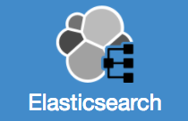

What's New
What's New in 3.19.x
- StreamSets Accounts
-
StreamSets Accounts enables users without an enterprise account to download the latest version of Data Collector and Transformer and to log into linked Data Collectors and Transformers. Users with a StreamSets enterprise account use the StreamSets Support portal for downloads.
You can use an existing Google or Microsoft account to register with StreamSets Accounts. Or, you can enter an email address and password. After you're registered, you can download the latest Data Collector tarball or access Docker for the latest Data Collector image. StreamSets Accounts provides downloads for the common installation tarball.
After you install Data Collector, you link it to StreamSets Accounts. StreamSets Accounts then provides single sign on authentication for Data Collector. You can change the authentication method as needed.
Note: Users with an enterprise account should not use StreamSets Accounts. Also, users who installed Data Collector through a cloud service provider marketplace do not need to use StreamSets Accounts. - Common Installation
-
StreamSets now provides a Data Collector common installation. The common installation is a tarball that contains all core Data Collector functionality as well as commonly-used stage libraries.
This installation allows you to create pipelines easily while using less disk space than the full installation. After you perform the common installation, you can install individual stage libraries as needed.
The common installation is available to users with an enterprise account through the StreamSets Support portal. The common installation is available to all other users through StreamSets Accounts.
- Stage Enhancements
-
- Amazon stages - When Amazon stages use an instance
profile to authenticate with Amazon Web Services (AWS), you can
configure the stages to assume another role. For example, you might
need to assume another role when the IAM policies attached to the
instance profile do not grant the required access.
To assume another role, you first must define the IAM policy in AWS that allows the instance profile to assume a role. Then, you configure the required stage properties in Data Collector.
Note: Data Collector will provide support to assume another role when using AWS access keys in a future release. - Kafka stages - The Kafka Consumer, Kafka Multitopic
Consumer, and Kafka Producer stages include a Security tab used to
configure one of the following options to connect securely to
Kafka:
- SSL/TLS encryption
- SSL/TLS encryption and authentication
- Kerberos authentication
- Kerberos authentication on SSL/TLS
The keytab properties where you can provide Kerberos credentials have been moved from the Kafka tab to the Security tab.
Previously, you configured Kafka security by configuring additional Kafka configuration properties. - Amazon SQS Consumer origin - You can specify the names of queues to process instead of specifying queue name prefixes.
- Google Pub/Sub Subscriber origin:
- The default value for the Subscriber Thread Pool Size property is now 1.
- The default value for the Num Pipeline Runners property is also 1.
These changes do not affect existing pipelines.
- Kinesis Consumer origin - You can configure additional Kinesis configuration properties that you require.
- JMS Consumer origin - The origin includes JMS headers as record
header attributes. JMS record header attributes are named as
follows:
jms.header.<header name> - Oracle CDC Client origin:
- You can use the origin to process data from Oracle Real Application Clusters (RAC) 12c, 18c and 19c.
- You can configure the origin to disable the LogMiner CONTINUOUS_MINE option.
- When parsing SQL query statements, the origin no longer
processes SELECT_FOR_UPDATE statements. This can affect
existing pipelines.
For information about possible upgrade impact, see Update Oracle CDC Client Pipelines.
- Delay processor - You can configure the processor to skip the delay for empty batches.
- Amazon stages - When Amazon stages use an instance
profile to authenticate with Amazon Web Services (AWS), you can
configure the stages to assume another role. For example, you might
need to assume another role when the IAM policies attached to the
instance profile do not grant the required access.
- Connections when Registered with Control Hub
-
When Data Collector version 3.19.0 is registered with the Control Hub November release, the following stages will support using Control Hub connections:
- Amazon stages
- Google Cloud stages
- JDBC stages
- Kafka stages
- Kudu stages
- Salesforce stages
Connections define the information required to access data in external systems. You create connections in Control Hub and then use those connections when configuring pipelines in Control Hub Pipeline Designer. You cannot use Control Hub connections in the Data Collector pipeline canvas.Important: If you register Data Collector version 3.19.0 with Control Hub cloud before the November release or with Control Hub on-premises version 3.18.x or earlier, then the Connection property that displays for these stages in the Control Hub Pipeline Designer is not supported. Do not change the property from the default value of None. If you select Choose Value or use a parameter to define the property, Pipeline Designer hides the remaining connection properties and the pipeline fails to run. - Stage Libraries
- This release includes the following new stage libraries:
Stage Library Name Description streamsets-datacollector-elasticsearch_6-lib For Elasticsearch 6.x. streamsets-datacollector-elasticsearch_7-lib For Elasticsearch 7.x.
- Additional Enhancements
-
- New Data Collector configuration property - The
http.access.control.exposed.headersproperty enables listing a set of headers that can be exposed as part of a cross-domain response.
- New Data Collector configuration property - The
What's New in 3.18.x
- Pipeline Advanced Options
Pipelines and most pipeline stages include advanced options with default values that should work in most cases. By default, new and upgraded pipelines hide the advanced options. Advanced options can include individual properties or complete tabs.
As you start designing pipelines, StreamSets recommends configuring the basic properties and using the default values for the advanced options. Then as you continue working with pipelines, explore the advanced options to find ways to fine tune processing.- Sample Pipelines
- Data Collector provides several sample pipelines that you can use to learn about Data Collector features or as a basis for building your own pipelines.
- Enterprise Stage Libraries
- In September 2020, StreamSets released updated Enterprise stage libraries for Databricks and Snowflake.
- Stage Enhancements
-
- HTTP Client processor - The Missing Values Behavior property determines the action that occurs when a request generates no response.
- Amazon S3 stages - "IAM roles" are now known as "instance profiles" in all Amazon S3 stages. This does not affect existing pipelines.
- Additional Enhancements
-
- Error records - Error records include Control Hub job information in
jobNameandjobIdrecord header attributes. - Default password for Google Cloud Platform marketplace
installation - The default password for Data Collector installed through the Google Cloud Platform marketplace is now
the VM Instance Id. Previously, the default password was
admin.
- Error records - Error records include Control Hub job information in
What's New in 3.17.x
- New Stage
- This release includes the following new stage:
- Stage Enhancements
- This release includes the following stage enhancements:
- Pipeline Enhancements
- This release includes the following pipeline enhancements:
- Pipeline run history - The pipeline run history displays the input, output, and error record count for each pipeline run.
- Pipeline run summary - Information about the most recent pipeline run remains available on the Summary tab of the pipeline after the pipeline stops. The summary includes run details such as the start time and duration.
- Pipeline start and stop events - The event records generated when a pipeline starts and stops include fields for the related Control Hub job ID and job name.
- Stage library panel display and stage installation:
- The stage library panel displays all Data Collector stages, instead of only the installed stages. Stages that are not installed appear disabled, or greyed out.
- When you click on a disabled stage, you can install the stage library that includes the stage.
- Security Enhancements
- This release includes the following security-related enhancements:
- Additional Enhancement
- This release includes the following additional enhancement:
- Data Collector production batch size - The default value for the production.maxBatchSize property in the Data Collector configuration file has increased to 50,000 records. This change does not affect existing pipelines.
- Deprecated Feature
- This release includes the following deprecated feature:
- Databricks ML Evaluator processor - This processor is deprecated and will be removed in a future release. Do not use the processor in new pipelines.
What's New in 3.16.x
- New Stages
- This release includes the following new stages:
- SFTP/FTP/FTPS executor - Use the executor to move or remove a file from an SFTP, FTP, or FTPS server upon receiving an event.
- New orchestration stages:
- Start Job origin - Use this origin to start a Control Hub job.
- Wait for Job Completion processor - Use this processor to wait for a Control Hub job to complete.
- Wait for Pipeline Completion processor - Use this processor to wait for a Data Collector, Transformer, or Edge pipeline to complete.
- Stage Enhancements
-
This release includes the following stage enhancements:
- Amazon stages - You can now configure an Authentication Method property to specify whether to connect with an IAM role, with AWS keys, or without authentication. Previously, you could not connect without authentication to a public bucket.
- Amazon S3 stages - The Amazon S3 origin, destination, and executor can use a virtual address model to access objects. Previously, the stages used a path address model.
- HTTP Client stages:
- HTTP status codes - Error logging details generated by HTTP Client stages now include HTTP status codes.
- HTTP status header attribute - The HTTP Client stages
include an
HTTP-Statusheader attribute that stores the HTTP status for each record. - Timeout defaults - The HTTP Client stages no longer allow 0 for the Connection Timeout or Read Timeout properties. The default value for Connect Timeout is now 250000 milliseconds. The default value for Read Timeout is 30000 milliseconds.
- HTTP Client origin record generation - You can configure the origin to generate records for all statuses that are not added to the Per-Status Actions list. You can also specify a field to write the error response body for those records.
- HTTP Server origin authentication enhancements - The origin can create more secure connections using Kerberos authentication. It can also use basic authentication when you enable TLS/SSL.
- JDBC Multitable Consumer origin header attributes - You can enable the origin to create JDBC header attributes.
- Kafka stages allow Kerberos credentials - You can specify Kerberos keytabs and principals in Kafka stages, including the Kafka Consumer, Kafka Multitopic Consumer, and Kafka Producer.
- Kafka Multitopic Consumer origin - You can include Kafka timestamps in the record header.
- Oracle CDC Client origin:
- 19c support - You can use the Oracle CDC Client origin to read changed data from Oracle 19c in addition to 11g, 12c, and 18c.
-
Property removal - With this release, initialization when Dictionary Source is set to Redo Logs has been improved. As a result, the Duration of Directory Extraction property is no longer needed and has been removed.
- REST Service origin:
-
API Gateway - You can configure the origin to use Data Collector as an API Gateway.
-
Authentication - The origin connect securely using Kerberos authentication. It can also use basic authentication when you enable TLS/SSL.
-
Endpoint URL - The microservice endpoint URL now displays in monitor mode.
-
- Salesforce origin event enhancement - The no-more-data event record
generated by the origin now includes a
record-countfield that specifies the number of records that were successfully processed. - Salesforce Lookup processor:
- Multiple results - You can configure the processor to write multiple return values as a list in a single record instead of returning only the first value or creating a record for each value.
- Bulk API - You can use the Salesforce Bulk API to look up records in Salesforce based on a SOQL query.
- SFTP/FTP/FTPS Client origin processing delay - You can configure a File Processing Delay property when you want to allow time for a file to be completely written before processing it.
- Start Pipeline processor:
- Pipeline name support - You can configure the Pipeline ID Type property to enable specifying the pipeline to start based on the pipeline name instead of the pipeline ID.
-
Unique Task Name property - You can specify a unique name for the processor that is included in the output record.
- Start Job processor:
- Job name support - You can configure the Job ID Type property to enable specifying the Control Hub job to start based on the job name instead of the job ID.
- Unique Task Name property - You can specify a unique name for the processor that is included in the output record.
- Enterprise Stage Libraries
- Enterprise stage libraries are free for use in both development and production.
- Additional Enhancements
-
This release includes the following additional enhancements:
-
Default users and groups for cloud service provider installations - Data Collector installed through a cloud service provider marketplace now includes only a default
adminuser account and no default groups. -
Group secrets in credential stores - You can configure Data Collector to validate a user’s group against a comma-separated list of groups allowed to access each secret.
- Required group argument in credential functions - If you
do not want to use the group argument in credential functions when
working with Data Collector and Control Hub, you can specify the default group using
allorall@<organization ID>. StreamSets recommends usingallso that you do not need to modify credential functions when migrating pipelines from Data Collector to Control Hub. Previously, you had to useall@<organization ID>. -
MapR 5.x no longer supported - With this release, MapR 5.x stage libraries are no longer supported and no longer available.
- Monitor mode indicator - Monitor mode now displays the
following real-time Running icon on the stage that is processing
data:
-
What's New in 3.15.x
- Installation
- This release includes the following installation enhancements:
- Data Collector downloads require registration - Data Collector installation packages downloaded from the StreamSets website now require that you register the Data Collector instance with StreamSets. Data Collector enforces the registration at different times, based on the
following installation types:
- A core installation of Data Collector requires registration when you install an additional stage library.
- A full installation of Data Collector requires registration during your initial login.
Registration involves submitting your contact information to receive a unique activation code by email and then entering the code in your Data Collector instance to activate the instance and use all functionality.
- Download access for enterprise customers - Customers with an enterprise account can now download all Data Collector installation packages from the StreamSets Support portal. Installation packages downloaded from the Support portal do not require that you register the Data Collector instance.
- Data Collector downloads require registration - Data Collector installation packages downloaded from the StreamSets website now require that you register the Data Collector instance with StreamSets. Data Collector enforces the registration at different times, based on the
following installation types:
- Enterprise Stage Libraries
- Enterprise stage libraries are now free for use in both development and production. You can now use Enterprise stage libraries without purchasing an enterprise license.
- Data Collector Configuration
- This release includes the following Data Collector configuration enhancement:
- Java heap size for cloud service provider installations - Data Collector installed through a cloud service provider marketplace now has a default Java heap size set to 50% of the available memory on the virtual machine.
What's New in 3.14.x
- Origins
- This release includes enhancements to the following origins:
- Cron Scheduler origin - The origin is no longer considered a Technology Preview feature and is approved for use in production.
- HTTP Server origin- You can now configure the origin either to not require an application ID or to accept requests from one of many application IDs.
- JDBC Multitable Consumer origin - The origin now converts SQL Server columns of the Datetimeoffset data type to the Data Collector Zoned_datetime data type.
- JDBC Query Consumer origin - The origin now converts SQL Server columns of the Datetimeoffset data type to the Data Collector Zoned_datetime data type.
- Start Pipeline origin - The origin is no longer considered a Technology Preview feature and is approved for use in production.
- Processors
- This release includes enhancements to the following processors:
- Control Hub API processor - The processor is no longer considered a Technology Preview feature and is approved for use in production.
- Start Job processor - The processor is no longer considered a Technology Preview feature and is approved for use in production.
- Start Pipeline processor - The processor is no longer considered a Technology Preview feature and is approved for use in production.
- Executors
- This release includes enhancements to the following executor:
- JDBC Query executor - The executor can now run one or more user-defined SQL queries each time it receives an event record. Previously, the executor could only run a single SQL query.
- Data Formats
- This release includes the following data formats enhancement:
- XML - When an origin reads XML data, you can now configure the origin to include the root element in the generated records. Previously, origins did not include the root element in the generated records.
- Microservice Pipelines
- This release includes the following microservice pipeline enhancement:
- Send Response to Origin destination - You can now specify response headers that the destination passes to the REST Service origin in a microservice pipeline.
- Working with Control Hub
- This release includes the following enhancement when working with Control Hub:
- Register Data Collector with Control Hub - Data Collector instances that are deployed behind a reverse proxy using user-defined path-based routes can now successfully be registered with Control Hub.
- Stage Libraries
- This release includes the following stage library enhancements:
- New stage libraries - This release includes the
following new stage library:
Stage Library Name Description streamsets-datacollector-cdh_kafka_4_1-lib For the Cloudera distribution of Apache Kafka - CDK 4.1.0 (based on Apache Kafka version 2.2.1).
- New stage libraries - This release includes the
following new stage library:
Data Collector Edge New Features and Enhancements
- Destinations in Edge Pipelines
- Data Collector Edge pipelines now support the InfluxDB destination.
What's New in 3.13.x
Data Collector version 3.13.x improves performance when running large numbers of pipelines and changes the API for communication between Data Collector and Control Hub.
In addition, this version updates the process for generating and uploading support bundles. From Data Collector, you now download the support bundle to your machine. You can then upload the support bundle from your machine to your StreamSets Support ticket.
What's New in 3.12.x
- Enterprise Stage Libraries
- Enterprise stage libraries are free for development purposes only. For information about purchasing an Enterprise stage library for use in production, contact StreamSets.
- Origins
- This release includes enhancements to the following origins:
- Groovy Scripting, JavaScript Scripting, and Jython Scripting - These origins now include two new
methods in the
batchobject:addError(<record>,<String message>- Appends an error record to the batch. The appended error record contains the associated error message. This method replaces thesdc.error.write(<record>, <String message>)method.addEvent(<event record>)- Appends an event to the batch. This method replaces thetoEvent(<event record>)method in thesdcobject.
- RabbitMQ Consumer - The origin now supports transport layer security (TLS) for connections with a RabbitMQ server. You can configure the required properties on the TLS tab.
- Salesforce - The origin has a new property to configure the streaming buffer size when subscribed to notifications. Configure this property to eliminate buffering capacity errors.
- SQL Server CDC Client - The origin can now be configured to convert unsupported data types into strings and continue processing data.
- SQL Server Change Tracking Client - The origin includes
the following enhancements:
- The origin now interprets a zero in the Fetch Size property as an indication to use the database default fetch size in JDBC statements.
- The origin can now be configured to convert unsupported data types into strings and continue processing data.
- Groovy Scripting, JavaScript Scripting, and Jython Scripting - These origins now include two new
methods in the
- Destinations
- This release includes enhancements to the following destinations:
- Azure Event Hub Producer - The destination can now write records as XML data.
- Cassandra - The destination includes the following
enhancements:
- The Disable Batch Insert property has been renamed Enable Batches, and the renamed property is enabled by default.
- The Request Timeout property has been renamed Write Timeout.
- RabbitMQ Producer - The destination now supports transport layer security (TLS) for connections with a RabbitMQ server. You can configure the required properties on the TLS tab.
- Data Formats
- This release includes the following data formats enhancement:
- Avro - For schemas located in Confluent Schema Registry, Data Collector now includes a property for you to specify the user information needed to connect to Schema Registry through basic authentication.
What's New in 3.11.x
- Origins
- This release includes enhancements to the following origins:
- Amazon S3 - The origin now generates event records when it starts processing a new object and when it finishes processing an object.
- Azure Data Lake Storage Gen1 - The origin is no longer considered a Technology Preview feature and is approved for use in production.
- Azure Data Lake Storage Gen2 - The origin is no longer considered a Technology Preview feature and is approved for use in production.
- Google Big Query - The origin now supports JSON service-account credentials pasted directly into the UI.
- Google Cloud Storage - The origin now supports JSON service-account credentials pasted directly into the UI.
- Google Pub/Sub Subscriber - The origin now supports JSON service-account credentials pasted directly into the UI.
- HTTP Client - The origin now supports time functions in the Resource URL property.
- Kafka Consumer - The origin can now be configured to save the Kafka message key in the record. The origin can save the key in a record header attribute, a record field, or both.
- Kafka Multitopic Consumer - The origin can now be configured to save the Kafka message key in the record. The origin can save the key in a record header attribute, a record field, or both.
- Salesforce - The origin has a new Mismatched Types Behavior property, which specifies how to handle fields with types that do not match the schema.
- SFTP/FTP/FTPS Client - The origin has three new timeout properties: Socket Timeout, Connection Timeout, and Data Timeout.
- Processors
- This release includes enhancements to the following processors:
- Field Type Converter - The processor can now convert to the Zoned Datetime data type from the Datetime data type or the Date data type.
- Groovy Evaluator - The processor now supports the use of
the
sdcwrapper object to access the constants, methods, and objects available to each script type. - HTTP Client - When responses to requests contain multiple values, the processor can now return the first value, all values in a list in a single record, or all values in separate records.
- JavaScript Evaluator - The processor now supports the
use of the
sdcwrapper object to access the constants, methods, and objects available to each script type. -
Jython Evaluator - The processor now supports the use of
the
sdcwrapper object to access the constants, methods, and objects available to each script type.
- Destinations
- This release includes enhancements to the following destinations:
- Azure Data Lake Storage Gen1 - The destination is no longer considered a Technology Preview feature and is approved for use in production.
- Azure Data Lake Storage Gen2 - The destination is no longer considered a Technology Preview feature and is approved for use in production.
- Cassandra - The destination has new properties to disable batches and to set a timeout for individual write requests.
- Google Big Query - The destination now supports JSON service-account credentials pasted directly into the UI.
- Google Cloud Storage - The destination now supports JSON service-account credentials pasted directly into the UI.
- Google Pub/Sub Subscriber - The destination now supports JSON service-account credentials pasted directly into the UI.
- HTTP Client - The destination now supports time functions in the Resource URL property.
- Kafka Producer - The destination can now pass Kafka message key values stored in a record header attribute to Kafka. On the Data Format tab, you configure the expected format of the key.
- Salesforce - The destination now writes data to Salesforce objects by matching case-sensitive field names. You can override the default field mappings by continuing to define specific mappings.
- SFTP/FTP/FTPS Client - The destination has three new timeout properties: Socket Timeout, Connection Timeout, and Data Timeout.
- Solr destination - The destination has two new timeout properties: Connection Timeout and Socket Timeout.
- Executors
- This release includes enhancements to the following executors:
- ADLS Gen1 File Metadata - The executor is no longer considered a Technology Preview feature and is approved for use in production.
- ADLS Gen2 File Metadata - The executor is no longer considered a Technology Preview feature and is approved for use in production.
- JDBC Query - The executor can now generate events that you can use in an event stream. You can configure the executor to include the number of rows returned or affected by the query when generating events.
- Spark - The executor now includes the following:
- Additional fields in generated event records to store the user who submitted the job and the time that the job started.
- Additional JARs property for applications written in Python.
- Technology Preview Functionality
- Data Collector includes certain new features and stages with the Technology Preview
designation. Technology Preview functionality is available for use in
development and testing, but is not meant for use in production.
Technology Preview stages include the following image on the stage icon: .
When Technology Preview functionality becomes approved for use in production, the release notes and documentation reflect the change, and the Technology Preview icon is removed from the UI.
The following Technology Preview stages are newly available in this release:- Cron Scheduler origin - Generates a record with the current datetime as scheduled by a cron expression.
- Start Pipeline origin - Starts a Data Collector, Data Collector Edge, or Transformer pipeline.
- Control Hub API processor- Calls a Control Hub API.
- Start Job processor - Starts a Control Hub job.
- Start Pipeline processor - Starts a Data Collector, Data Collector Edge, or Transformer pipeline.
- Pipelines
-
This release includes the following pipeline enhancement:
- You can now configure pipelines to write error records to Amazon S3.
- Data Collector Configuration
- This release includes the following Data Collector configuration enhancement:
- The Data Collector
configuration file
sdc.properties contains a new stage-specific
property,
stage.conf_com.streamsets.pipeline.stage.hive.impersonate.current.user. You can set the property totrueto enable the Hive Metadata processor, the Hive Metastore destination, and the Hive Query executor to impersonate the current user when connecting to Hive.
- The Data Collector
configuration file
sdc.properties contains a new stage-specific
property,
- Stage Libraries
- This release includes the following stage library enhancements:
- New stage libraries - This release includes the
following new stage libraries:
Stage Library Name Description streamsets-datacollector-cdh_6_3-lib For the Cloudera CDH version 6.3 distribution of Apache Hadoop. streamsets-datacollector-orchestrator-lib For the orchestration stages. - Updated stage libraries - This release includes updates
to the following stage library:
Stage Library Name Description streamsets-datacollector-hdp_3_1-lib For Hortonworks 3.1, the library now includes two additional stages: - Spark Evaluator processor
- Spark executor
- New stage libraries - This release includes the
following new stage libraries:
What's New in 3.10.x
- Enterprise Stage Libraries
- Enterprise stage libraries are free for development purposes only. For information about purchasing an Enterprise stage library for use in production, contact StreamSets.
- Origins
- This release includes the following new origins:
- Groovy Scripting - Runs a Groovy script to create Data Collector records.
- JavaScript Scripting - Runs a JavaScript script to create Data Collector records.
- Jython Scripting - Runs a Jython script to create Data Collector records.
- NiFi HTTP Server - Listens for requests from a NiFi PutHTTP processor and processes NiFi FlowFiles.
- Processors
- This release includes enhancements to the following processors:
- Groovy Evaluator, JavaScript Evaluator, and Jython Evaluator - These scripting processors now
support the following:
- User-defined parameters - On the Advanced tab, enter
parameters and values. In the script, access the value with
the
sdc.userParamsdictionary. - Full-screen script editing - With your cursor in the script field, press either F11 or Esc, depending on your operating system, to toggle full-screen editing.
- User-defined parameters - On the Advanced tab, enter
parameters and values. In the script, access the value with
the
- Groovy Evaluator, JavaScript Evaluator, and Jython Evaluator - These scripting processors now
support the following:
- Destinations
- This release includes enhancements to the following destinations:
- Cassandra - The destination has four new properties to help you debug issues with the destination: Connection Timeout, Read Timeout, Consistency Level, and Log Slow Queries.
- RabbitMQ Producer - The destination has a new Set Expiration property, available when setting AMQP message properties on the RabbitMQ tab. Clear the Set Expiration property to disable expiration on messages that the destination sends.
- Executors
- This release includes enhancements to the following executor:
- JDBC Query - The executor can now run queries in parallel to improve throughput. On the Advanced tab, select the Enable Parallel Queries property to have the executor run queries simultaneously on each connection to the database.
- Data Formats
- This release includes enhancements to the following data formats:
- Delimited data format - You can now specify when Data Collector inserts quotes in generated delimited data. The Data Generator processor and destinations that write delimited data include a new Quote Mode property on the Data Format tab when you select a custom delimiter format for delimited data. Configure the Quote Mode property to generate data that quotes all fields, only fields that contain special characters, or no fields.
- Excel data format - In origins that read the Excel data format, you can now configure the origin to read either from all sheets in a workbook or from particular sheets in a workbook. Also, you can configure the origin to skip cells that do not have a corresponding header value.
- Data Governance Tools
- This release includes the following data governance tool enhancement:
- Expression Language
- This release includes the following new field functions:
f:index()- Returns the index within the parent list field. Returns -1 if the field is not in a list.f:parent()- Returns the parent field.f:parentPath()- Returns the path of the parent field.f:getSiblingWithName(<name>)- Returns the sibling field with the name matching<name>, if the field exists.f:hasSiblingWithName(<name>)- Returnstrueif there is a sibling field with a name matching<name>.f:hasSiblingWithValue(<name>, <value>)- Returnstrueif there is a sibling field with a name matching<name>that has value matching<value>.
- Data Collector Configuration
- This release includes the following Data Collector configuration enhancement:
- The Data Collector
configuration file
sdc.properties contains a new stage-specific
property,
stage.conf_com.streamsets.pipeline.stage.jdbc.drivers.load, where you can list JDBC drivers that Data Collector automatically loads for all pipelines.
- The Data Collector
configuration file
sdc.properties contains a new stage-specific
property,
- Stage Libraries
- This release includes the following stage library enhancements:
- New stage libraries - This release includes the
following new stage libraries:
Stage Library Name Description streamsets-datacollector-cdh_6_1-lib For the Cloudera CDH version 6.1 distribution of Apache Hadoop. streamsets-datacollector-cdh_6_2-lib For the Cloudera CDH version 6.2 distribution of Apache Hadoop. streamsets-datacollector-cdh_spark_2_3_r3-lib For the Cloudera CDH cluster Kafka with CDS powered by Spark 2.3 release 3. streamsets-datacollector-cdh_spark_2_3_r4-lib For the Cloudera CDH cluster Kafka with CDS powered by Spark 2.3 release 4. - Legacy stage libraries - The following stage libraries
are now legacy stage libraries:
Stage Library Name Description streamsets-datacollector-hdp_2_6-lib For the Hortonworks version 2.6.x distribution of Apache Hadoop. streamsets-datacollector-hdp_2_6-flume-lib For the Hortonworks version 2.6.x distribution of Apache Flume. streamsets-datacollector-hdp_2_6-hive2-lib For the Hortonworks version 2.6.x distribution of Apache Hive version 2.1. streamsets-datacollector-hdp_2_6_1-hive1-lib For the Hortonworks version 2.6.1 distribution of Apache Hive version 1.x. streamsets-datacollector-hdp_2_6_2-hive1-lib For the Hortonworks version 2.6.2 distribution of Apache Hive version 1.x. Legacy stage libraries that are more than two years old are not included with Data Collector. Though not recommended, you can still install the older stage libraries.
If you have pipelines that use these legacy stage libraries, you will need to update the pipelines to use a more current stage library or install the legacy stage library. For more information see Update Pipelines using Legacy Stage Libraries.
- New stage libraries - This release includes the
following new stage libraries:
What's New in 3.9.x
- Origins
- This release includes enhancements to the following origins:
-
Hadoop FS Standalone and MapR FS Standalone - These origins include the following tab and property name changes:
- The Hadoop FS tab is now the Connection tab.
- The Hadoop FS URI property is now the File System URI property.
- The HDFS User property is now the Impersonation User property.
- The Hadoop FS Configuration Directory property is now the Configuration Files Directory property.
- The Hadoop FS Configuration property is now the Additional Configuration property.
The functionality associated with these properties has not changed.
- JDBC Multitable Consumer - The origin now supports using multithreaded partition processing when the primary key or user-defined offset column is an Oracle Timestamp with time zone data type and each row has the same time zone.
- JMS Consumer - The origin now supports reading messages from durable topic subscriptions, which can have only one active subscriber at a time.
- SFTP/FTP/FTPS Client - The origin, formerly called SFTP/FTP Client, now supports FTPS (FTP over SSL). Post processing is now disabled after selecting the Whole File data format, which does not support post processing.
-
- Processors
- This release includes the following new processor:
- Couchbase Lookup - Looks up documents in Couchbase Server to enrich records with data.
- Destinations
- This release includes the following new destination:
- SFTP/FTP/FTPS Client - Writes whole files to a URL using SFTP, FTP, or FTPS.
- Executors
- This release includes the following enhancements to executors:
- Pipeline Finisher - The executor includes a new Reset Offset option that ensures that the pipeline processes all available data with each pipeline run.
- Technology Preview Functionality
- Data Collector includes certain new features and stages with the Technology Preview
designation. Technology Preview functionality is available for use in
development and testing, but is not meant for use in production.
Technology Preview stages include the following image on the stage icon: .
When Technology Preview functionality becomes approved for use in production, the release notes and documentation reflect the change, and the Technology Preview icon is removed from the UI.
The following Technology Preview stages are available in this release:
- Azure Data Lake Storage Gen1 origin - Reads data from Microsoft Azure Data Lake Storage Gen1.
- Azure Data Lake Storage Gen2 origin - Reads data from Microsoft Azure Data Lake Storage Gen2.
- Azure Data Lake Storage Gen1 destination - Writes data to Microsoft Azure Data Lake Storage Gen1.
- Azure Data Lake Storage Gen2 destination - Writes data to Microsoft Azure Data Lake Storage Gen2.
- ADLS Gen1 File Metadata executor - Changes file metadata, creates an empty file, or removes a file or directory in Microsoft Azure Data Lake Storage Gen1 upon receipt of an event.
- ADLS Gen2 File Metadata executor - Changes file metadata, creates an empty file, or removes a file or directory in Microsoft Azure Data Lake Storage Gen2 upon receipt of an event.
- Pipelines
- This release includes the following pipeline enhancements:
- Pipeline Start menu - The Data Collector toolbar now includes a pipeline Start menu with the following
options:
-
Start Pipeline
-
Reset Origin and Start
-
Start with Parameters
Previously, the Reset Origin and Start option was not available. The Start with Parameters option was located under the More icon.
-
- Generated events - For stages that generate events, the properties panel now includes a Generated Events tab, which lists and describes the events that origins can generate.
- Pipeline Start menu - The Data Collector toolbar now includes a pipeline Start menu with the following
options:
- Data Governance Tools
- This release includes the following data governance tool enhancement:
- Expression Language
- This release includes the following new time function:
time:extractNanosecondsFromString(<string>)- Converts a String date with nanoseconds precision to an epoch or UNIX time in milliseconds, and then adds the nanoseconds using the following format:<milliseconds_from_epoch><n><nanoseconds>For example, the string
’29/05/2019 10:12:09.123456789’is converted to1559124729123<n>456789.
- Data Collector Configuration
- This release includes the following Data Collector configuration enhancements:
- Antenna Doctor - Data Collector now includes Antenna Doctor, which is a rule-based engine that suggests potential fixes and workarounds to common issues. When needed, you can edit the Data Collector configuration file, sdc.properties, to disable Antenna Doctor or to disable Antenna Doctor from periodically retrieving knowledge base updates from the internet.
- Legacy stage libraries - Package Manager can now install legacy stage libraries.
- Thycotic Secret Server support - Data Collector now integrates with the Thycotic Secret Server credential store system.
- Stage Libraries
- This release includes the following stage library enhancements:
- New Stage Libraries - This release includes the
following new stage libraries:
Stage Library Name Description streamsets-datacollector-cdh_5_16-lib For the Cloudera CDH version 5.16 distribution of Apache Hadoop. streamsets-datacollector-kinetica_7_0-lib For Kinetica 7.0. streamsets-datacollector-thycotic-credentialstore-lib For the Thycotic Secret Server credential store system. - Legacy Stage Libraries - The following stage libraries
are now legacy stage libraries:
Stage Library Name Description streamsets-datacollector-apache-kafka_0_11-lib For Kafka version 0.11.x. streamsets-datacollector-cdh_5_12-lib For the Cloudera CDH version 5.12 distribution of Apache Hadoop. streamsets-datacollector-cdh_5_13-lib For the Cloudera CDH version 5.13 distribution of Apache Hadoop. streamsets-datacollector-cdh_kafka_2_1-lib For the Cloudera distribution of Apache Kafka 2.1.x (0.9.0). streamsets-datacollector-cdh_kafka_3_0-lib For the Cloudera distribution of Apache Kafka 3.0.0 (0.11.0). streamsets-datacollector-cdh-spark_2_1-lib For the Cloudera CDH cluster Kafka with CDS powered by Spark 2.1. streamsets-datacollector-mapr_5_2-lib For MapR version 5.2. Legacy stage libraries that are more than two years old are not included with Data Collector. Though not recommended, you can still install the older stage libraries.
If you have pipelines that use these legacy stage libraries, you will need to update the pipelines to use a more current stage library or install the legacy stage library. For more information see Update Pipelines using Legacy Stage Libraries.
- New Stage Libraries - This release includes the
following new stage libraries:
Data Collector Edge New Features and Enhancements
- Origins in Edge Pipelines
- When you enable SSL/TLS for the HTTP Server origin in a Data Collector Edge pipeline, the origin now supports using a keystore file in the PKCS #12 format.
- Processors in Edge Pipelines
- Data Collector Edge pipelines now support the HTTP Client processor.
- Destinations in Edge Pipelines
- Data Collector Edge pipelines now support the Azure Event Hub Producer and the Azure IOT Hub Producer destinations.
What's New in 3.8.0
Data Collector version 3.8.0 includes the following new features and enhancements:
- Memory Monitoring
- With version 3.8.0, Data Collector memory monitoring has been removed. Memory monitoring was disabled by default and was to be used only in development for troubleshooting specific issues. StreamSets recommends using JMX or operating system monitoring for memory consumption.
- Enterprise Stage Libraries
- Enterprise stage libraries are free for development purposes only. For information about purchasing the stage library for use in production, contact StreamSets.
- Origins
- This release includes enhancements to the following origins:
- Dev Raw Data Source - The development origin can now generate events.
- Hadoop FS Standalone - The origin can now read files from multiple directories specified with a glob pattern.
- Oracle CDC Client - JDBC Fetch Size property has been
replaced by the following new properties:
- JDBC Fetch Size for Current Window
- JDBC Fetch Size for Past Windows
To enable expected behavior, upgraded pipelines use the previous JDBC Fetch Size configuration for the new properties.
- REST Service - The origin can now generate responses in XML format in addition to JSON format.
- Salesforce - The origin now supports aggregate functions in SOQL queries.
- SFTP/FTP Client - The origin includes the following enhancements:
- The origin now supports using an email address for the user name in the resource URL.
- The origin now supports using a glob pattern or a regular expression to define the file name pattern. Previously, the origin supported only a glob pattern.
- When configured for private key authentication, the origin now supports entering the full path to the private key file or entering the private key in plain text. Previously, the origin supported only entering the full path to the file.
- After processing a file, the origin can now keep, archive, or delete the file.
- SQL Server CDC Client - The default for the Maximum
Transaction Length property has changed from
${1*HOUR}to-1to opt out of using the property. Upgraded pipelines are not affected. - WebSocket Client - The origin can now generate responses in XML format in addition to JSON format.
- WebSocket Server - The origin can now generate responses in XML format in addition to JSON format.
- Processors
- This release includes the following new processor:
- Field Mapper - Maps an expression to a set of fields to alter field paths, field names, or field values.
- Destinations
- This release includes enhancements to the following destinations:
- Google Pub/Sub Publisher - The destination now includes properties to configure batches.
- Solr - The destination can now directly map record fields to Solr schema fields.
- Pipelines
- This release includes the following pipeline enhancements:
- Pipeline export with or without plain text credentials - Data Collector now provides the following pipeline export options:
- Export - Strips all plain text credentials from the exported pipeline.
- Export with Plain Text Credentials - Includes all plain text credentials in the exported pipeline.
Previously, Data Collector always included plain text credentials in exported pipelines.
- New microservice raw responses - Origins in microservice pipelines can now send raw responses, passing responses to the origin system without an envelope.
- Pipeline labels enhancement - You can now configure pipeline labels in the New Pipeline dialog box when you create a pipeline. As in earlier releases, you can also configure labels on the General tab of pipeline properties.
- Pipeline export with or without plain text credentials - Data Collector now provides the following pipeline export options:
- Data Formats
- This release includes the following data formats enhancement:
- Delimited - Data Collector now supports multi-character field separators in delimited data.
- Data Collector Configuration
- This release includes the following Data Collector configuration enhancements:
- Protect sensitive data in configuration files - You can now
protect sensitive data in Data Collector configuration files by storing the data in an external location and
then using the
execfunction to call a script or executable that retrieves the data. For example, you can develop a script that decrypts an encrypted file containing a password. Or you can develop a script that calls an external REST API to retrieve a password from a remote vault system.After developing the script, use theexecfunction in the Data Collector configuration file to call the script or executable as follows:${exec("<script name>")} - AWS Secrets Manager support - Data Collector now integrates with the AWS Secrets Manager credential store system.
- Protect sensitive data in configuration files - You can now
protect sensitive data in Data Collector configuration files by storing the data in an external location and
then using the
- Stage Libraries
- This release includes the following stage library enhancements:
- New Stage Libraries - This release includes the following
new stage libraries:
Stage Library Name Description streamsets-datacollector-aws-secrets-manager-credentialstore-lib For the AWS Secrets Manager credential store system. streamsets-datacollector-hdp_3_1-lib For Hortonworks version 3.1. streamsets-datacollector-mapr_6_1-lib For MapR version 6.1.0. streamsets-datacollector-mapr_6_1-mep6-lib For MapR 6.1.0, MapR Ecosystem Pack (MEP) version 6. - Legacy Stage Libraries - The following stage libraries are
now legacy stage libraries:
Stage Library Name Description streamsets-datacollector-cdh_5_10-lib For the Cloudera CDH version 5.10 distribution of Apache Hadoop. streamsets-datacollector-cdh_5_11-lib For the Cloudera CDH version 5.11 distribution of Apache Hadoop. Legacy stage libraries that are more than two years old are not included with Data Collector. Though not recommended, you can still download and install the older stage libraries as custom stage libraries.
If you have pipelines that use these legacy stage libraries, you will need to update the pipelines to use a more current stage library or install the legacy stage library manually. For more information see Update Pipelines using Legacy Stage Libraries.
- New Stage Libraries - This release includes the following
new stage libraries:
Data Collector Edge New Features and Enhancements
This Data Collector Edge (SDC Edge) version includes new features and enhancements in the following areas:
- Origins in Edge Pipelines
- This release includes the following origin enhancements:
- In edge pipelines, origins can now process compressed files.
- The Directory origin now supports file post-processing in edge pipelines. You can now configure an error directory, and you can have the origin archive or delete files after processing.
- Destinations in Edge Pipelines
- This release includes the following destination enhancements:
- Edge pipelines now support the Amazon S3 destination.
- In edge pipelines, you can now configure the Kafka Producer destination to connect securely to Kafka through SSL/TLS.
- Data Formats in Edge Pipelines
- This release includes the following data formats enhancements:
- Stages included in edge pipelines now list only the data formats that are supported in edge pipelines.
- The following stages can now process the binary data format when they are included in edge pipelines:
- The following stages can now process the whole file data format when they are included in edge pipelines:
What's New in 3.7.0
- Microsoft Azure Support
- With this release, you can now use the Hadoop FS
Standalone origin to read data from Azure Data Lake Storage. You
can also use the Hadoop FS destination to write to Azure Data Lake Storage.
Use the Hadoop FS destination when you need to use Azure Active Directory refresh token authentication to connect to Azure Data Lake Storage, or when you want to write to Azure Data Lake Storage in a cluster streaming pipeline. For all other cases, use the existing Azure Data Lake Storage destination.
- Enterprise Stage Libraries
- Enterprise stage libraries are free for development purposes only. For information about purchasing the stage library for use in production, contact StreamSets.
- Installation
-
- Install Data Collector on Microsoft Azure - The process to install Data Collector on Microsoft Azure has been enhanced. Data Collector now automatically starts as a service after the resource is deployed. You no longer need to use SSH to log in to the virtual machine to run the Data Collector installation script and then start Data Collector.
- Origins
- This release includes the following new origin:
- Teradata Consumer origin - Reads data from multiple Teradata Database tables. To use this origin, you must install the Teradata stage library. This is an enterprise stage library.
- Processors
- This release includes enhancements to the following processors:
- Databricks ML Evaluator - With this release, this processor is no longer considered a Technology Preview feature and is approved for use in production. Also, you can now specify a model path relative to the Data Collector resources directory.
- Field Hasher - The processor now supports hashing with the SHA512 cryptographic hash function.
- Field Remover - In addition to removing fields, and
removing fields with null values, the processor now supports
removing fields under the following conditions:
- When the values are empty strings.
- When the values are null or empty strings.
- When the values are a specified value.
- Field Renamer - The processor now supports the StreamSets expression language in target field paths. With this feature, you can use string functions to change field names to be all uppercase or lowercase.
- JDBC Lookup - The processor now supports returning multiple matching values as a list in a single record.
- Kudu Lookup - The processor now supports the Decimal data type available with Apache Kudu 1.7 and later.
- MLeap Evaluator - With this release, this processor is no longer considered a Technology Preview feature and is approved for use in production. Also, you can now specify a model path relative to the Data Collector resources directory.
- MongoDB Lookup - The processor includes the following
updates to property and tab names:
-
Several properties have moved from the MongoDB tab to a new Lookup tab.
-
The SDC Field to Document Field Mapping property is now known as Document to SDC Field Mappings.
-
The Field Name in Document property is now known as Document Field.
-
The New Field to Save Lookup Result property is now known as Result Field.
-
- PMML Evaluator - The processor is approved for use in production. This release removes the Technology Preview designation. Also, you can now specify a model path relative to the Data Collector resources directory.
- Salesforce Lookup - The processor now supports using time functions in SOQL queries.
- TensorFlow Evaluator - With this release, this processor is no longer considered a Technology Preview feature and is approved for use in production. Also, you can now specify a model path relative to the Data Collector resources directory.
- Destinations
- This release includes the following new destinations:
- MemSQL Fast Loader destination - Inserts data into a MemSQL or MySQL database table with a LOAD statement. To use this destination, you must install the MemSQL stage library. This is an Enterprise stage library.
- Snowflake destination - Writes new or CDC data to tables in a Snowflake database schema. To use this destination, you must install the Snowflake stage library. This is an Enterprise stage library.
- Data Governance Tools
-
- Pipeline metadata - Data Collector now publishes additional pipeline metadata to Cloudera Navigator and Apache Atlas, including the pipeline description, labels, parameters, version, and the user who started the pipeline.
- Pipeline Parameters
-
- Parameters for checkboxes and drop-down menus - You can now call pipeline parameters for properties that display as checkboxes and drop-down menus. The parameters must evaluate to a valid option for the property.
- Cluster Pipelines
-
- Gateway
node requires writable temporary directory - When you run
a cluster pipeline, Data Collector now requires that the Java temporary directory on the gateway
node is writable. The Java temporary directory is specified by the
Java system property
java.io.tmpdir. On UNIX, the default value of this property is typically/tmpand is writable.For information about upgrading cluster pipelines that previously ran on gateway nodes without a writable temporary directory, see Update Cluster Pipelines.
- Gateway
node requires writable temporary directory - When you run
a cluster pipeline, Data Collector now requires that the Java temporary directory on the gateway
node is writable. The Java temporary directory is specified by the
Java system property
- Expression Language
-
- String functions - This release includes the following
new function:
str:lastIndexOf(<string>,<subset>)- Returns the index within a string of the last occurrence of the specified subset of characters.
- String functions - This release includes the following
new function:
- Data Collector Configuration
-
- Data Collector Security Manager - For enhanced security, the Data
Collector configuration file now provides a property to enable the
Data Collector Security Manager, instead of the Java Security Manager. The Data Collector Security Manager does not allow stages to access files in the
following directories:
-
Configuration directory defined in the SDC_CONF environment variable.
-
Data directory defined in the SDC_DATA environment variable.
In addition, the Data Collector Security Manager does not allow stages to write to files in the resources directory defined in the SDC_RESOURCES environment variable. Stages can only read files in the resources directory.
By default, Data Collector uses the Java Security Manager which allows stages to access files in all Data Collector directories.
-
- HTTP/2 support - Data Collector now provides a property in the Data Collector configuration file
to enable support of the HTTP/2 protocol for the UI and API. Because
HTTP/2 requires TLS, to enable HTTP/2, configure both the
http2.enableand thehttps.portproperties. - Package Manager - The Package Manager includes the following
enhancements:
-
Data Collector now provides a
package.manager.repository.linksproperty to enable specifying alternate locations for the Package Manager repository. -
The Package Manager now displays the list of stages associated with each stage library.
-
- Data Collector logging - Data Collector now logs the stage instance that generates each log line.
- Data Collector Security Manager - For enhanced security, the Data
Collector configuration file now provides a property to enable the
Data Collector Security Manager, instead of the Java Security Manager. The Data Collector Security Manager does not allow stages to access files in the
following directories:
- Stage Libraries
-
- New Stage Libraries - This release includes the
following new stage libraries:
Stage Library Name Description streamsets-datacollector-cdh_kafka_3_1-lib Cloudera distribution of Apache Kafka 3.1.0 (1.0.1). streamsets-datacollector-kinetica_6_2-lib For Kinetica 6.2. Includes the KineticaDB destination.
- Updated Stage Libraries - This release includes updates
to the following stage libraries:
Stage Library Name Description streamsets-datacollector-apache-pulsar_2-lib Apache Pulsar version 2.x. streamsets-datacollector-cdh_6_0-lib Cloudera CDH version 6.0.x distribution of Apache Hadoop. Now includes the following stages: - HBase Lookup processor
- Spark Evaluator processor
- HBase destination
The stage library no longer includes the following stage:- Solr destination
- New Stage Libraries - This release includes the
following new stage libraries:
Data Collector Edge New Features and Enhancements
- Technology Preview Functionality
- The following Technology Preview stage is available for edge pipelines in
this release:
- gRPC Client origin - A new origin that processes data from a gRPC server by calling gRPC server methods. The origin can call unary RPC and server streaming RPC methods. Use this origin only in pipelines configured for edge execution mode.
- Origins in Edge Pipelines
- This release includes enhancements to the following origins that are
supported in edge pipelines:
- File Tail - The origin can now read multiple sets of files when it is included in edge pipelines.
- Windows Event Log - The origin can now use the Event
Logging API or the Windows Event Log API to read data from a
Microsoft Windows event log. Microsoft recommends using the newer
Windows Event Log API.
Previously, the origin used the Event Logging API only. Upgraded pipelines continue to use the Event Logging API.
- Processors in Edge Pipelines
- Edge pipelines now support the Dev Random Error processor.
- Destinations in Edge Pipelines
- Edge pipelines now support the following destinations:
- To Error
- To Event
- Kinesis Firehose
- Kinesis Producer
- SDC Edge as a System Service
- If you register SDC Edge to run as a system service, you can now run a command as an administrator to display the status of the service.
- SDC Edge Configuration
-
- Log
file enhancement - You can now modify the default log
file directory in the SDC Edge configuration file,
<SDCEdge_home>/etc/edge.conf. You can no longer modify the default log file directory when you manually start SDC Edge. - SDC
Edge host name - You can now configure the host name
where SDC Edge runs by defining the
base-http-urlproperty in the SDC Edge configuration file.
- Log
file enhancement - You can now modify the default log
file directory in the SDC Edge configuration file,
What's New in 3.6.0
Data Collector version 3.6.0 includes the following new features and enhancements:
- Data Collector Edge (SDC Edge)
-
- Register SDC Edge with Control Hub - You can now use the command line to register SDC Edge with Control Hub.
- Delimited data format - Stages in edge pipelines can now process the delimited data format.
- Functions - The
sdc:hostname()function can now return the host name of a Data Collector or Data Collector Edge machine and can be used within edge pipelines.
What's New in 3.5.0
Data Collector version 3.5.0 includes the following new features and enhancements:
- Origins
-
- New Pulsar Consumer origin - A new origin that reads messages from one or more topics in an Apache Pulsar cluster.
- JDBC Multitable Consumer and JDBC Query Consumer origin enhancements - These origins now include an option to convert timestamp data to the String data type instead of to the Datetime data type to ensure that the precision is maintained.
- Salesforce origin enhancement - When using the Bulk API, the origin can now execute an SOQL query that includes one or more subqueries.
- WebSocket Client and WebSocket Server origin enhancements - When included in a microservice pipeline, the origins can now send responses back to the originating endpoint when used with microservice destinations in the same pipeline.
- Processors
-
- New Encrypt and Decrypt Fields processor - A new processor that encrypts or decrypts individual field values.
- New MongoDB Lookup processor - A new processor that performs lookups in MongoDB and passes all values from the returned document to a new list-map field. Use the MongoDB Lookup to enrich records with additional data.
- New HTTP Router processor - A new processor that passes records to streams based on the HTTP method and URL path in record header attributes. Use the HTTP Router processor in pipelines with an origin that creates HTTP method and path record header attributes - including the HTTP Server origin and the REST Service origin.
- Field Type Converter processor enhancement - The processor can now convert the Boolean data type to the Integer, Long, or Short data type.
- Salesforce Lookup
processor enhancements - The processor includes the following
enhancements:
- The processor can now return multiple values. You can configure the lookup to return the first value or to return all matches as separate records.
- You can now configure how the processor handles a lookup that returns no value in fields with no default value defined. Upgraded pipelines continue to send records with no return value and no default value to error.
- Destinations
-
- New Pulsar Producer destination - A new destination that writes data to topics in an Apache Pulsar cluster.
- New Syslog destination - A new destination that writes data to a Syslog server.
- HTTP Client, Kafka Producer, and Kinesis Producer destination enhancements - When included in a microservice pipeline, the destinations can now send responses to the microservice origin in the pipeline.
- Executors
-
- New
Databricks Job Launcher executor - A new executor that starts
a Databricks job each time it receives an event.
With the addition of this new executor, Data Collector has removed the ability to use the Spark executor with Databricks. If you upgrade pipelines that include the Spark executor with Databricks, you must update the pipeline to use the Databricks Job Launcher executor after you upgrade.
- New
Databricks Job Launcher executor - A new executor that starts
a Databricks job each time it receives an event.
- Hive Stages
-
- JDBC Credentials - The following Hive stages now allow you to enter
credentials separately from the JDBC URL for Hive:
- Hive Metadata processor
- Hive Metastore destination
- Hive Query executor
- JDBC Credentials - The following Hive stages now allow you to enter
credentials separately from the JDBC URL for Hive:
- Salesforce Stages
-
- API version - Data Collector now ships with version 43.0 of the Salesforce Web Services Connector libraries used by the following Salesforce stages:
- Technology Preview Functionality
-
Data Collector now includes certain new features and stages with the Technology Preview designation. Technology Preview functionality is available for use in development and testing, but is not meant for use in production.
Technology Preview stages display a Technology Preview icon on the upper left corner of the preview stage, as follows:

When Technology Preview functionality becomes approved for use in production, the release notes and documentation reflect the change, and the Technology Preview icon is removed from the UI.
The following Technology Preview stages are available in this release:- Databricks ML Evaluator processor - A new processor that uses a machine learning model exported with Databricks ML Model Export to generate evaluations, scoring, or classifications of data.
- MLeap Evaluator processor - A new processor that uses a machine learning model stored in an MLeap bundle to generate evaluations, scoring, or classifications of data.
- PMML Evaluator processor - A new processor that uses a machine learning model stored in the Predictive Model Markup Language (PMML) format to generate predictions or classifications of data.
- TensorFlow Evaluator processor - A new processor that uses TensorFlow machine learning models to generate predictions or classifications of data.
- Data Formats
-
- Delimited data format enhancement - When reading delimited data that contains headers with empty values, Data Collector now replaces the empty values with the string “empty-” plus the column number starting from zero. For example, if the 3rd column header is empty, then the field name in Data Collector becomes “empty-2”. Previously, Data Collector retained the empty field name.
- Excel data format enhancement - When reading Excel data, Data Collector now processes the underlying raw values for numeric columns in a spreadsheet, rather than the displayed values. For example, if a cell contains 3.14159 but the display format is set to 2 decimals such that the spreadsheet displays 3.14, Data Collector still processes the full value of 3.14159. Previously, Data Collector encountered errors when processing an Excel spreadsheet that contained displayed values.
- Data Collector Edge (SDC Edge)
-
- Download an installer for Windows - You can now download a Microsoft installer to install SDC Edge on a Windows operating system.
- Run SDC Edge as a service - You can now register SDC Edge to run as a system service on Darwin, Linux, or Windows operating systems.
- System Metrics origin enhancement - The origin can now read metrics from specific processes running on the edge device.
- Windows Event Log origin enhancement - The origin can now read from a custom Windows log.
- Dev Data Generator origin supported - Edge pipelines now support the Dev Data Generator origin.
- TensorFlow Evaluator processor supported - Edge pipelines support the new TensorFlow Evaluator processor.
- Functions - Edge pipelines now support all job functions and the pipeline:startTime() function.
- Disable the ability to manage production edge pipelines - By default, you can use the Data Collector UI or REST API to manage edge pipelines deployed to an SDC Edge - including previewing, validating, starting, stopping, resetting the origin, and monitoring the pipelines. You can now disable the ability to manage edge pipelines in a production environment using the Data Collector UI or REST API. When disabled, you manage edge pipelines using Control Hub or by starting pipelines when you start SDC Edge.
- Skip verifying trusted certificates - In a test or development environment, you can start SDC Edge so that it skips verifying trusted certificates. For example, you might want to skip verifying trusted certificates when SDC Edge is registered with a Control Hub on-premises installation enabled for HTTPS and you want to temporarily avoid configuring the truststore file for SDC Edge.StreamSets highly recommends that you configure SDC Edge to verify trusted certificates in a production environment.
- Working with Control Hub
-
- Automate registering and unregistering
Data Collectors - You can now use an automation tool such as Ansible, Chef, or
Puppet to automate the registering and unregistering of Data Collectors using the following
commands:
streamsets sch register streamsets sch unregister
- Automate registering and unregistering
Data Collectors - You can now use an automation tool such as Ansible, Chef, or
Puppet to automate the registering and unregistering of Data Collectors using the following
commands:
- Microservice Pipelines
-
- Origins for microservice pipelines - The following origins can now send
responses back to the originating REST API client when used with
destinations that send records to the origin in the same microservice
pipeline:
- WebSocket Client origin
- WebSocket Server origin
- Destinations for microservice pipelines - The following destinations can
now send records to the origin in the microservice pipeline with the
specified response:
- HTTP Client destination
- Kafka Producer destination
- Kines Producer destination
- Sample microservice pipeline - When you create a microservice pipeline, the sample microservice pipeline now includes the new HTTP Router processor instead of the Stream Selector processor to route data to different streams based on the request method.
- Origins for microservice pipelines - The following origins can now send
responses back to the originating REST API client when used with
destinations that send records to the origin in the same microservice
pipeline:
- Data Governance Tools
-
- Supported stages - Data Collector can now publish metadata to data governance tools for the following
stages:
- Amazon S3 origin
- Kafka Multitopic Consumer origin
- SFTP/FTP Client origin
- Kafka Producer destination
- Cloudera Navigator versions - Data Collector can now publish metadata to Cloudera Navigator running on Cloudera
Manager versions 5.10 to 5.15.
Previously, publishing metadata to Cloudera Navigator was supported only on Cloudera Manager version 5.10 or 5.11.
- Secure connections to Cloudera Navigator - If Cloudera Navigator is configured for TLS/SSL, Data Collector requires a local truststore file to verify the identity of the Cloudera Navigator Metadata Server. You now configure the truststore file location and password in the $SDC_CONF/sdc.properties file when you configure the connection to Cloudera Navigator.
- Supported stages - Data Collector can now publish metadata to data governance tools for the following
stages:
- Credential Stores
-
- New Microsoft Azure Key Vault credential store - You can now define credentials in Microsoft Azure Key Vault and then use the Data Collector credential functions in stage properties to retrieve those values.
- Commands for a Java keystore credential store - You now use
the
stagelib-cli jks-credentialstorecommand to add, list, and delete credentials in a Java keystore credential store. Previously you used thejks-cscommand, which has now been deprecated.
- Expression Language
-
- String
functions - This release includes the following new
function:
- str:split() - Splits a string into a list of string values.
- Pipeline
functions - This release includes the following new
function:
- pipeline:startTime() - Returns the start time of the pipeline as a Datetime value.
- Job
functions - This release includes the following new
functions:
- job:id() - Returns the ID of the job if the pipeline was run from a Control Hub job. Otherwise, returns "UNDEFINED".
- job:name() - Returns the name of the job if the pipeline was run from a Control Hub job. Otherwise, returns "UNDEFINED".
- job:startTime() - Returns the start time of the job if the pipeline was run from a Control Hub job. Otherwise, returns the start time of the pipeline.
- job:user() - Returns the user who started the job if the pipeline was run from a Control Hub job. Otherwise, returns "UNDEFINED".
- String
functions - This release includes the following new
function:
- Stage Libraries
-
- New stage libraries - This release includes the following
new stage libraries:
Stage Library Name Description streamsets-datacollector-apache-kafka_1_1-lib Apache Kafka version 1.1.x streamsets-datacollector-apache-kafka_2_0-lib Apache Kafka version 2.0.x streamsets-datacollector-apache-pulsar_2-lib Apache Pulsar version 2.1.0-incubating streamsets-datacollector-azure-keyvault-credentialstore-lib Microsoft Azure Key Vault credential store system streamsets-datacollector-cdh_6_0-lib Cloudera CDH version 6.0 distribution of Apache Hadoop Note: Does not include the following stages:- HBase Lookup processor
- Spark Evaluator processor
- HBase destination
streamsets-datacollector-crypto-lib For cryptography stages, including the Encrypt and Decrypt Fields processor streamsets-datacollector-mapr_6_0-mep5-lib MapR Ecosystem Pack (MEP) version 5 for MapR 6.0.1 streamsets-datacollector-tensorflow-lib TensorFlow - Legacy stage libraries - The following stage libraries are
now legacy stage libraries:
Stage Library Name Description streamsets-datacollector-apache-kafka_0_9-lib Apache Kafka version 0.9.x streamsets-datacollector-apache-kafka_0_10-lib Apache Kafka version 0.10.x streamsets-datacollector-cdh_5_8-lib Cloudera CDH version 5.8 distribution of Apache Hadoop streamsets-datacollector-cdh_5_9-lib Cloudera CDH version 5.9 distribution of Apache Hadoop streamsets-datacollector-cdh_kafka_2_0-lib Cloudera distribution of Apache Kafka 2.0.x (0.9.0) streamsets-datacollector-hdp_2_4-lib Hortonworks version 2.4 distribution of Apache Hadoop streamsets-datacollector-hdp_2_4-hive1-lib Hortonworks version 2.4.x distribution of Apache Hive version 1.x streamsets-datacollector-hdp_2_5-lib Hortonworks version 2.5.x distribution of Apache Hadoop streamsets-datacollector-hdp_2_5-flume-lib Hortonworks version 2.5.x distribution of Apache Flume streamsets-datacollector-mapr_5_1-lib MapR version 5.1 Legacy stage libraries that are more than two years old are not included with Data Collector. Though not recommended, you can still download and install the older stage libraries as custom stage libraries.
If you have pipelines that use these legacy stage libraries, you will need to update the pipelines to use a more current stage library or install the legacy stage library manually. For more information see Update Pipelines using Legacy Stage Libraries.
- New stage libraries - This release includes the following
new stage libraries:
- Miscellaneous
-
- Import pipelines from an external HTTP URL - You can now use Data Collector to import pipelines from an external HTTP URL. For example, you can import pipelines from the StreamSets GitHub repository.
- Collection of usage statistics - When you log in to Data Collector as the admin/admin user for the first time, you can now choose to improve Data Collector by sending anonymized usage data. Previously, the ui.enable.usage.data.collection property in the Data Collector configuration file determined whether usage data was collected. This property has been removed.
What's New in 3.4.0
Data Collector version 3.4.0 includes the following new features and enhancements:
- Origins
-
- New PostgreSQL CDC Client origin - Use the PostgreSQL CDC Client origin to process change data capture information for a PostgreSQL database.
- New Test origin- You can now configure a virtual test origin to provide test data for data preview to aid in pipeline development. In Control Hub, you can also use test origins when developing pipeline fragments.
- Amazon S3, Directory, SFTP/FTP Client, Google Cloud Storage enhancements - The listed origins can now process Microsoft Excel files.
- Dev Data Generator origin enhancement - The development origin can now generate additional types of data for testing purposes - such as sample address data, names, or prices.
- Hadoop FS origin enhancements - The origin includes the following
enhancements:
- Process Amazon S3 data in cluster EMR batch mode - Use the origin in a cluster EMR batch pipeline that runs on an Amazon EMR cluster to process data from Amazon S3.
- Process Amazon S3 data in cluster batch mode - Use the origin in a cluster batch pipeline that runs on a Cloudera distribution of Hadoop (CDH) or Hortonworks Data Platform (HDP) cluster to process data from Amazon S3.
- HTTP Client origin enhancements - The origin includes the following
changes and enhancements:
- The origin now uses buffered request transfer encoding by default. Upgraded pipelines retain their previous configuration.
- HEAD request responses create an empty record. Information returned from the HEAD appear in record header attributes.
- HTTP Server origin enhancement - The origin now includes the name of the client or proxy that made the request in the remoteHost record header attribute.
- MongoDB origin enhancement - You can now use a date field as the offset field.
- Oracle CDC Client origin enhancements - The origin includes the
following changes and enhancements:
- Multithreaded parsing - When using local caching and parsing the SQL query, the origin can now use multiple threads to parse transactions.
- PEG Parser - To improve performance for very wide tables, you can try our experimental PEG parser.
- With this release, the Query Timeout property has been removed. You can no longer configure a query to timeout before the end of a LogMiner session. The existing LogMiner Session Window property defines how long the session lasts.
- Salesforce origin enhancement - When using the SOAP API, the origin can now execute an SOQL query that includes one or more subqueries. Support for subqueries using the Bulk API will be added in a future release.
- Processors
-
- New Whole File Transformer processor - Use the Whole File Transformer processor to convert fully written Avro files to Parquet in a whole file pipeline.
- Field Hasher processor enhancement - The processor can now add a user-defined field separator to fields before hashing.
- HTTP Client processor enhancements - The processor includes the
following changes and enhancements:
- The processor now uses buffered request transfer encoding by default. Upgraded pipelines retain their previous configuration.
- HEAD request responses create an empty record. Information returned from the HEAD appear in record header attributes.
- The resolved request URL is now written to the Data Collector log when Data Collector logging is set to debug or higher.
- JDBC Lookup processor enhancement - When using local caching, the processor can now use additional cores to prepopulate the cache to enhance pipeline performance.
- Destinations
-
- New Couchbase destination - A new destination that writes data to a Couchbase database.
- New Splunk destination - A new destination that writes data to Splunk using the Splunk HTTP Event Collector (HEC).
- Cassandra destination enhancement - You can now use SSL/TLS to connect to Cassandra.
- HTTP Client destination enhancement - The destination now uses buffered request transfer encoding by default. Upgraded pipelines retain their previous configuration.
- Executors
-
- Amazon S3 executor enhancements - The executor includes the following
enhancements:
- The executor can now copy objects to a new location and optionally delete the original object.
- The executor can now generate event records each time the executor creates a new object, adds tags to an existing object, or completes copying an object to a new location.
- Amazon S3 executor enhancements - The executor includes the following
enhancements:
- Data Collector Edge (SDC Edge)
-
- New System Metrics origin - A new origin that reads system metrics - such as CPU and memory usage - from the edge device where SDC Edge is installed.
- HTTP Client origin supported - Edge sending pipelines now support the HTTP Client origin. However, the origin does not currently support batch processing mode, pagination, or OAuth2 authorization in edge pipelines.
- WebSocket Client origin supported - Edge sending pipelines now support the WebSocket Client origin.
- Pipeline functions - Edge pipelines now support the
following pipeline functions:
- pipeline:id()
- pipeline:title()
- pipeline:user()
- Preview and validate edge pipelines - You can now use the Data Collector UI or the command line and REST API to preview and validate edge pipelines.
- Publish multiple edge pipelines to SDC Edge - You can now use the Data Collector Home page to directly publish multiple edge pipelines at one time to an SDC Edge that is running. Previously, you could only publish a single edge pipeline at a time.
- Download edge pipelines from SDC Edge - You can now use the Data Collector UI to download all edge pipelines deployed to an SDC Edge in addition to all sample edge pipelines included with SDC Edge.
- Filter the Home page by edge pipelines - You can now select Edge Pipelines as a category on the Data Collector Home page to view all available edge pipelines.
- Microservice pipelines
- You can now create microservices using microservice
pipelines. Use the following new stages in microservice pipelines:
- New REST Service origin - Listens on an HTTP endpoint, parses the contents of all authorized requests, and sends responses back to the originating REST API. Creates multiple threads to enable parallel processing in a multithreaded pipeline.
- Send Response to Origin destination - Sends records with the specified response to the microservice origin in the pipeline.
- Pipelines
-
- Notifications - You can now configure a pipeline to send an email or webhook when the pipeline changes to the Running_Error state.
- Error records - Error records now include an errorJobID internal header attribute when the pipeline that generated the error record was started by a Control Hub job.
- Install external libraries from the properties panel - You can now select a stage in the pipeline canvas and then install external libraries for that stage from the properties panel. Previously, you had to navigate to the Package Manager page to install external libraries.
- Cluster Pipelines
-
- New cluster EMR batch mode - Data Collector can now use the cluster EMR batch mode to run on an Amazon EMR
cluster to process data from Amazon S3. Data Collector runs as an application on top of MapReduce in the EMR cluster.
Data Collector can run on an existing EMR cluster or on a new EMR cluster that is provisioned when the cluster pipeline starts. When you provision a new EMR cluster, you can configure whether the cluster remains active or terminates when the pipeline stops.
Use the Hadoop FS origin to process data from Amazon S3 in cluster EMR batch mode.
- Logs - You can now configure the Data Collector on the master gateway node to use the log4j rolling file appender to write log messages to an sdc.log file. This configuration is propagated to the worker nodes such that each Data Collector worker writes log messages to an sdc.log file within the YARN application directory.
- New cluster EMR batch mode - Data Collector can now use the cluster EMR batch mode to run on an Amazon EMR
cluster to process data from Amazon S3. Data Collector runs as an application on top of MapReduce in the EMR cluster.
- Data Formats
-
- New Excel
data format - You can now use the following file-based
origins to process Microsoft Excel files:
- Amazon S3 origin
- Directory origin
- Google Cloud Storage origin
- SFTP/FTP Client origin
- Avro and Protobuf data formats - To preserve the ordering of fields, the Avro and Protobuf data formats now use the list-map root field type instead of the map root field type.
- New Excel
data format - You can now use the following file-based
origins to process Microsoft Excel files:
- Stage Libraries
-
This version of Data Collector includes the following new stage libraries:
- streamsets-datacollector-cdh_5_15-lib - The Cloudera CDH 5.15 distribution of Hadoop.
- streamsets-datacollector-emr_hadoop_2_8_3-lib - Includes the Hadoop FS origin for cluster EMR batch mode pipelines that run on an Amazon EMR cluster to process data from Amazon S3.
- Miscellaneous
-
- Cloudera Manager CSD enhancement - The Cloudera Manager CSD now enables specifying a StreamSets Customer ID, used when generating support bundles. The customer ID is generated by the StreamSets Support team for users with a paid subscription.
- Postgres rename - Postgres CSV and Postgres Text delimited format types are now known as PostgreSQL CSV and PostgreSQL Text, respectively The Postgres Metadata processor is now known as the PostgreSQL Metadata processor. And the Drift Synchronization Solution for Postgres is now known as the Drift Synchronization Solution for PostgreSQL.
- Documentation enhancement - The online help has a new look and feel. All of the previous documentation remains exactly where you expect it, but it is now easier to view and navigate on smaller devices like your tablet or mobile phone.
What's New in 3.3.1
- Origin
-
- JDBC Multitable Consumer origin enhancement - You can now optionally define a schema exclusion pattern to exclude some schemas from being read. The schema exclusion pattern uses a Java-based regular expression, or regex.
- Processor
-
- Kudu Lookup processor enhancements:
- You can now configure the Maximum Number of Worker Threads property to limit the number of threads that the processor uses.
- You can now configure an Admin Operation Timeout property to determine how many milliseconds to allow for admin-type operations, such as opening a table or getting a table schema.
- Kudu Lookup processor enhancements:
- Destination
-
- Kudu destination enhancements:
- You can now configure the Maximum Number of Worker Threads property to limit the number of threads that the destination uses.
- You can now configure an Admin Operation Timeout property to determine how many milliseconds to allow for admin-type operations, such as opening a table or getting a table schema.
- Kudu destination enhancements:
- Environment Variables
-
- Data Collector now includes a SPARK_KAFKA_VERSION environment
variable that is set to 0.10 by default in the Data Collector
environment configuration file -
sdc.env.shorsdcd.env.sh. Do not change this environment variable value. This variable is used only when you run cluster streaming mode pipelines on a Cloudera CDH cluster.
- Data Collector now includes a SPARK_KAFKA_VERSION environment
variable that is set to 0.10 by default in the Data Collector
environment configuration file -
What's New in 3.3.0
Data Collector version 3.3.0 includes the following new features and enhancements:
- Cluster Pipelines
-
- When using Spark 2.1 or later and Kafka 0.10.0.0 or later in a cluster pipeline that reads from a Kafka cluster on YARN, you can now enable the pipeline to use Kafka security features such as SSL/TLS and Kerberos authentication.
- Origins
-
- WebSocket Client Origin enhancement - You can now configure the origin to send an initial message or command after connecting to the WebSocket server.
- Processors
-
- New SQL Parser processor - A processor that parses SQL queries. For example, if you set the Parse SQL Query property to false in the Oracle CDC origin, the origin writes the SQL query to an “sql” field that can be parsed by the SQL Parser.
- Field Zip processor enhancement - The Continue option for the Field Does Not Exist property is now named Include without Processing.
- Pipelines
-
- Notifications - You can now configure a pipeline to send an email or webhook when the pipeline changes to the Stop_Error state.
- Preview - The default value of the Preview Timeout property has been increased to 30,000 milliseconds. Previously the default was 10,000 milliseconds.
- Edge Pipelines
-
- Sensor Reader origin enhancement - This development stage can now generate records with thermal data such as that generated by BCM2835 onboard thermal sensors.
- Stage Libraries
-
-
This version of Data Collector includes several new, changed, and removed stage libraries because of the introduction of cluster streaming mode with support for Kafka security features using Spark 2.1 or later and Kafka 0.10.0.0 or later.
For more information about the changed stage libraries, see Upgrade to Spark 2.1 or Later.
-
What's New in 3.2.0.0
Data Collector version 3.2.0.0 includes the following new features and enhancements:
- Origins
-
- New Hadoop FS Standalone origin - Similar to the Directory origin, the Hadoop FS Standalone origin can use multiple threads to read fully-written files. Use this origin in standalone execution mode pipelines to read files in HDFS.
- New MapR FS Standalone origin - Similar to the Directory origin, the MapR FS Standalone origin can use multiple threads to read fully-written files. Use this origin in standalone execution mode pipelines to read files in MapR FS.
- New Dev Snapshot Replaying origin - The Dev Snapshot Replaying origin is a development stage that reads records from a downloaded snapshot file.
- HTTP Client origin enhancement - You can now configure the origin to process JSON files that include multiple JSON objects or a single JSON array
- JDBC Multitable Consumer origin enhancements - The origin can now generate table-finished and schema-finished events when it completes processing all rows in a table or schema. You can also configure the number of seconds that the origin delays generating the no-more-data event. You might want to configure a delay if you want the table-finished or schema-finished events to appear in the event stream before the no-more-data event.
- Oracle CDC Client origin enhancements - The origin includes the
following enhancements:
- You can set a new Parse SQL Query property to false to skip parsing the SQL queries. Instead, the origin writes the SQL query to a “sql” field that can be parsed later. Default is true, which retains the previous behavior of parsing the SQL queries.
- The Send Redo Query property has been renamed. The new name is Send Redo Query in Headers.
- TCP Server origin enhancement - You can now use the origin to read the supported Data Collector data formats when passed in Flume events as Avro messages.
- Processors
-
- HTTP Client processor enhancement - You can now use the PATCH method with the processor.
- JDBC Lookup processor enhancement - The Retry on Cache Miss property has been renamed to Retry on Missing Value.
- Kudu Lookup processor enhancement - You can now configure the processor behavior when a lookup returns no value.
- Destinations
-
- Hadoop FS, Local FS, and MapR FS destination enhancements - These destinations now support writing records using the SDC Record format.
- HTTP Client destination enhancement - You can now use the PATCH method with the destination.
- KineticaDB destination enhancement - You can now define a list of custom worker node URLs so that the destination uses host names instead of IP addresses to connect to the worker nodes.
- Executors
-
- MapReduce executor enhancement - You can now use the new Avro to ORC job to convert Avro files to ORC files.
- Data Collector Edge (SDC Edge)
-
SDC Edge includes the following enhancements:
- JavaScript Evaluator processor supported - Both edge sending pipelines and edge receiving pipelines now support the JavaScript Evaluator processor.
- Publish edge pipelines to SDC Edge - You can now use the Data Collector UI to directly publish edge pipelines to an SDC Edge that is running. Previously, you had to first export edge pipelines from Data Collector, and then move them to the SDC Edge installed on the edge device.
- Manage edge pipelines from the Data Collector UI - You can now use the Data Collector UI to start, monitor, stop, and reset the origin for edge pipelines running on a remote SDC Edge. Previously, you had to use the command line and REST API to manage edge pipelines on SDC Edge.
- Miscellaneous
-
- Pipeline error handling enhancement - You can now configure pipelines to write error records to Azure Event Hub.
- Pipeline runner idle time enhancement - You can configure the number of seconds that a pipeline runner waits before sending an empty batch.
- Runtime statistics enhancement - Runtime statistics now include the number of empty or idle batches that are generated by the pipeline.
- Snapshot enhancement - Snapshots now include record header attributes for error records. Previously, snapshots included only the record fields in an error record.
- Stages
-
This version of Data Collector includes the following new stage library:
What's New in 3.1.2.0
- Directory origin enhancement - When processing files using the Last Modified Timestamp read order, the Directory origin now assesses the change timestamp in addition to the last modified timestamp to establish file processing order.
- Impersonation enhancement for Control Hub - You can now configure Data Collector to use a partial Control Hub user ID for Hadoop impersonation mode and shell impersonation mode. Use this feature when Data Collector is registered with Control Hub, and when the Hadoop or target operating system has user name requirements that do not allow using the full Control Hub user ID.
- NetFlow 9 processing enhancement - When processing NetFlow 9 data, Data Collector now includes FIELD_SENDER and FIELD_RECIPIENT fields to include sender and receiver information.
What's New in 3.1.1.0
- Origins
-
- Directory origin enhancements - The origin includes the
following enhancements:
- The Max Files in Directory property has been renamed to Max
Files Soft Limit. As the name indicates, the property is now
a soft limit rather than a hard limit. As such, if the
directory contains more files than the configured Max Files
Soft Limit, the origin can temporarily exceed the soft limit
and the pipeline can continue running.
Previously, this property was a hard limit. When the directory contained more files, the pipeline failed.
- The origin includes a new Spooling Period property that determines the number of seconds to continue adding files to the processing queue after the maximum files soft limit has been exceeded.
- The Max Files in Directory property has been renamed to Max
Files Soft Limit. As the name indicates, the property is now
a soft limit rather than a hard limit. As such, if the
directory contains more files than the configured Max Files
Soft Limit, the origin can temporarily exceed the soft limit
and the pipeline can continue running.
- Directory origin enhancements - The origin includes the
following enhancements:
- Destinations
-
-
Einstein Analytics destination enhancement - The Append
Timestamp to Alias property is now disabled by default for new
pipelines. When disabled, the destination can append, delete,
overwrite, or upsert data to an existing dataset. When enabled, the
destination creates a new dataset for each upload of data.
The property was added in version 3.1.0.0 and was enabled by default. Pipelines upgraded from versions earlier than 3.1.0.0 have the property enabled by default.
- Solr destination enhancements - The destination includes
the following enhancements:
- The destination now includes an Ignore Optional Fields property that allows ignoring null values in optional fields when writing records.
- The destination allows you to configure Wait Flush, Wait Searcher, and Soft Commit properties to tune write performance.
-
Einstein Analytics destination enhancement - The Append
Timestamp to Alias property is now disabled by default for new
pipelines. When disabled, the destination can append, delete,
overwrite, or upsert data to an existing dataset. When enabled, the
destination creates a new dataset for each upload of data.
What's New in 3.1.0.0
- Data Synchronization Solution for Postgres
- This release includes a beta version of the Data Synchronization Solution for Postgres. The solution uses the new Postgres Metadata processor to detect drift in incoming data and automatically create or alter corresponding PostgreSQL tables as needed before the data is written. The solution also leverages the JDBC Producer destination to perform the writes.
- Data Collector Edge (SDC Edge)
- SDC Edge includes the following enhancements:
- Edge pipelines now support the following stages:
- Dev Raw Data Source origin
- Kafka Producer destination
- Edge pipelines now support the following functions:
- emptyList()
- emptyMap()
- isEmptyMap()
- isEmptyList()
- length()
- record:attribute()
- record:attributeOrDefault()
- size()
- When you start SDC Edge, you can now change the default log directory.
- Edge pipelines now support the following stages:
- Origins
-
- HTTP Client origin enhancement - You can now configure the origin to use the Link in Response Field pagination type. After processing the current page, this pagination type uses a field in the response body to access the next page.
- HTTP Server origin enhancement - You can now use the origin to process the contents of authorized HTTP PUT requests.
- Kinesis Consumer origin enhancement - You can now define tags to apply to the DynamoDB lease table that the origin creates to store offsets.
- MQTT Subscriber origin enhancement - The origin now includes a TOPIC_HEADER_NAME record header attribute that includes the topic information for each record.
- MongoDB origin enhancement - The origin now generates a no-more-data event when it has processed all available documents and the configured batch wait time has elapsed.
- Oracle CDC Client origin enhancement - You can now specify the tables to process by using SQL-like syntax in table inclusion patterns and exclusion patterns.
- Salesforce origin enhancements - The origin includes the following
enhancements:
- The origin can now subscribe to Salesforce platform events.
- You can now configure the origin to use Salesforce PK Chunking.
- When necessary, you can disable query validation.
- You can now use Mutual Authentication to connect to Salesforce.
- Processors
-
- New Field Replacer processor - A new processor that
replaces values in fields with nulls or with new values.
The Field Replacer processor replaces the Value Replacer processor which has been deprecated. The Field Replacer processor lets you define more complex conditions to replace values. For example, the Field Replacer can replace values which fall within a specified range. The Value Replacer cannot replace values that fall within a specified range.
StreamSets recommends that you update Value Replacer pipelines as soon as possible.
- New Postgres Metadata processor - A new processor that determines when changes in data structure occur and creates and alters PostgreSQL tables accordingly. Use as part of the Drift Synchronization Solution for Postgres in development or testing environments only.
- Aggregator processor enhancements - The processor includes the
following enhancements:
- Event records now include the results of the aggregation.
- You can now specify the root field for event records. You can use a String or Map root field. Upgraded pipelines retain the previous behavior, writing aggregation data to a String root field.
- JDBC Lookup processor enhancement - The processor includes the
following enhancements:
- You can now configure a Missing Values Behavior property that defines processor behavior when a lookup returns no value. Upgraded pipelines continue to send records with no return value to error.
- You can now enable the Retry on Cache Miss property so that the processor retries lookups for known missing values. By default, the processor always returns the default value for known missing values to avoid unnecessary lookups.
- Kudu Lookup processor enhancement - The processor no longer requires that you add a primary key column to the Key Columns Mapping. However, adding only non-primary keys can slow the performance of the lookup.
- Salesforce Lookup processor enhancement - You can now use Mutual Authentication to connect to Salesforce.
- New Field Replacer processor - A new processor that
replaces values in fields with nulls or with new values.
- Destinations
-
- New Aerospike destination - A new destination that writes data to Aerospike.
- New Named Pipe destination- A new destination that writes data to a UNIX named pipe.
- Einstein Analytics destination enhancements - The destination
includes the following enhancements:
- You can specify the name of the edgemart container that contains the dataset.
- You can define the operation to perform: Append, Delete, Overwrite, or Upsert.
- You can now use Mutual Authentication to connect to Salesforce.
- Elasticsearch destination enhancement - You can now
configure the destination to merge data which performs an update
with
doc_as_upsert. - Salesforce destination enhancement - The destination includes the
following enhancements:
- The destination can now publish Salesforce platform events.
- You can now use Mutual Authentication to connect to Salesforce.
- Data Formats
-
- Log
data format enhancement - Data Collector can now process
data using the following log format types:
- Common Event Format (CEF)
- Log Event Extended Format (LEEF)
- Log
data format enhancement - Data Collector can now process
data using the following log format types:
- Expression Language
-
- Error record functions - This release includes the
following new function:
- record:errorStackTrace() - Returns the error stack trace for the record.
- Time functions - This release includes the following new
functions:
- time:dateTimeZoneOffset() - Returns the time zone offset in milliseconds for the specified date and time zone.
- time:timeZoneOffset() - Returns the time zone offset in milliseconds for the specified time zone.
- Miscellaneous functions - This release includes the
following changed and new functions:
- runtime:loadResource() - This function has been changed to trim any leading or trailing whitespace characters from the file before returning the value in the file. Previously, the function did not trim white space characters - you had to avoid including unnecessary characters in the file.
- runtime:loadResourceRaw() - New function that returns the value in the specified file, including any leading or trailing whitespace characters in the file.
- Error record functions - This release includes the
following new function:
- Additional Stage Libraries
- This release includes the following additional stage libraries:
- Apache Kudu 1.6
- Cloudera 5.13 distribution of Apache Kafka 2.1
- Cloudera 5.14 distribution of Apache Kafka 2.1
- Cloudera CDH 5.14 distribution of Hadoop
- Kinetica 6.1
- Miscellaneous
-
- Data Collector classpath validation - Data Collector now performs a classpath health check upon starting up. The results of the health check are written to the Data Collector log. When necessary, you can configure Data Collector to skip the health check or to stop upon errors.
- Support bundle Data Collector property - You can configure a property in the Data Collector configuration file to have Data Collector automatically upload support bundles when problems occur. The property is disabled by default.
- Redirect registered Data Collector user logins property
- You can enable a property in the Control Hub configuration file,
dpm.properties, to redirect Data Collector user logins to Control Hub using the HTML meta refresh method. - Runtime properties enhancement - You can now use environment variables in runtime properties.
What's New in 3.0.3.0
- MySQL
Binary Log origin enhancement - You can now use a Keep Alive thread
to connect to the MySQL server by configuring the Enable KeepAlive Thread and
the KeepAlive Interval advanced properties.
By default, the origin uses Keep Alive threads with an interval of one minute. Upgraded pipelines also use the new defaults.
- HTTP Client processor enhancement - The processor can now process compressed data.
- Scripting processors enhancement - The Groovy Evaluator, JavaScript Evaluator, and Jython Evaluator processors can use a new boolean sdcFunction.isPreview() method to determine if the pipeline is in preview mode.
What's New in 3.0.2.0
- SFTP/FTP Client origin enhancement - The origin can now generate events when starting and completing processing for a file and when all available files have been processed.
What's New in 3.0.1.0
- Azure IoT/Event Hub Consumer origin enhancement - The Azure Event Hub Consumer origin has been renamed to the Azure IoT/Event Hub Consumer origin.
- HTTP Server origin enhancement - The HTTP Server origin now includes path and queryString record header attributes, as well as any other HTTP header attributes included in the request.
- MongoDB origins enhancement - Both the MongoDB origin and the MongoDB Oplog origin now support delegated authentication and the BSON data type for binary data.
- SQL Server CDC origin enhancement - The SQL Server CDC origin now includes information from the SQL Server CDC __$command_id column in a record header attribute named jdbc. __$command_id.
- MongoDB destination enhancement - The MongoDB destination now supports delegated authentication.
What's New in 3.0.0.0
- Installation
-
- Java requirement - Data Collector now supports both Oracle Java 8 and OpenJDK 8.
- RPM packages - StreamSets now provides the following Data Collector RPM packages:
- EL6 - Use to install Data Collector on CentOS 6, Oracle Linux 6, or Red Hat Enterprise Linux 6
- EL7 - Use to install Data Collector on CentOS 7, Oracle Linux 7, or Red Hat Enterprise Linux 7.
Previously, StreamSets provided a single RPM package used to install Data Collector on any of these operating systems.
- Edge Pipelines
- You can now design and run edge pipelines to read data from or send data to an edge device. Edge pipelines are bidirectional. They can send edge data to other Data Collector pipelines for further processing. Or, they can receive data from other pipelines and then act on that data to control the edge device.
- Origins
-
- New Amazon SQS Consumer origin - An origin that reads messages from Amazon Simple Queue Service (SQS). Can create multiple threads to enable parallel processing in a multithreaded pipeline.
- New Google Cloud Storage origin - An origin that reads fully written objects in Google Cloud Storage.
- New MapR DB CDC origin - An origin that reads changed MapR DB data that has been written to MapR Streams. Can create multiple threads to enable parallel processing in a multithreaded pipeline.
- New MapR Multitopic Streams Consumer origin - An origin that reads messages from multiple MapR Streams topics. It can create multiple threads to enable parallel processing in a multithreaded pipeline.
- New UDP Multithreaded Source origin - The origin listens for UDP messages on one or more ports and queues incoming packets on an intermediate queue for processing. It can create multiple threads to enable parallel processing in a multithreaded pipeline.
- New WebSocket Client origin - An origin that reads data from a WebSocket server endpoint.
- New Windows Event Log origin - An origin that reads data from Microsoft Windows event logs. You can use this origin only in pipelines configured for edge execution mode.
- New Sensor Reader development origin - A development origin that generates sample atmospheric data for edge pipelines.
- Amazon S3 origin enhancements:
- The origin now produces no-more-data events and includes a new socket timeout property.
- You can now specify the number of times the origin retries a query. The default is three.
- Directory origin enhancement - The origin can now use multiple threads to perform parallel processing of files.
- HTTP Client origin enhancement - The origin can now log request and response data to the Data Collector log.
- JDBC Multitable Consumer origin enhancements:
- The origin can now use non-incremental processing for tables with no primary key or offset column.
- You can now specify an Init Query to be executed after establishing a connection to the database, before performing other tasks. This can be used, for example, to modify session attributes.
- A new Queries Per Second property determines how many
queries can be run every second.
This property replaces the Query Interval property. For information about possible upgrade impact, see JDBC Multitable Consumer Query Interval Change.
- JDBC Query Consumer origin enhancements:
- You can now specify an Init Query to be executed after establishing a connection to the database, before performing other tasks. This can be used, for example, to modify session attributes.
- The Microsoft SQL Server CDC functionality in the JDBC Query Consumer origin is now deprecated and will be removed from the origin in a future release. For upgrade information, see Update JDBC Query Consumer Pipelines used for SQL Server CDC Data.
- Kafka Multitopic Consumer origin enhancement - The origin is now
available in the following stage libraries, in addition to the
Apache Kafka 0.10 stage library:
-
Apache Kafka 0.9
-
CDH Kafka 2.0 (0.9.0) and 2.1 (0.9.0)
-
HDP 2.5 and 2.6
-
- Kinesis Consumer origin enhancement - You can now specify the number of times the origin retries a query. The default is three.
- Oracle CDC Client origin enhancements:
- When using SCNs for the initial change, the origin now treats the specified SCN as a starting point rather than looking for an exact match.
- The origin now passes raw data to the pipeline as a byte array.
- The origin can now include unparsed strings from the parsed SQL query for unsupported data types in records.
- The origin now uses local buffering instead of Oracle LogMiner buffering by default. Upgraded pipelines require no changes.
- The origin now supports reading the Timestamp with Timezone data type. When reading Timestamp with Timezone data, the origin includes the offset with the datetime data in the Data Collector Zoned Datetime data type. It does not include the time zone ID.
- SQL Server CDC Client origin enhancements - You can now perform the
following tasks with the SQL Server CDC Client origin:
- Process CDC tables that appear after the pipeline starts.
- Check for schema changes and generate events when they are found.
-
In addition, a new Capture Instance Name property replaces the Schema and Table Name Pattern properties from earlier releases.
You can simply use the schema name and table name pattern for the capture instance name. Or, you can specify the schema name and a capture instance name pattern, which allows you to specify specific CDC tables to process when you have multiple CDC tables for a single data table.
Upgraded pipelines require no changes.
- UDP Source origin enhancement - The Enable Multithreading property that enabled using multiple epoll receiver threads is now named Use Native Transports (epoll).
- Processors
-
- New Aggregator processor - A processor that aggregates data within a window of time. Displays the results in Monitor mode and can write the results to events.
- New Delay processor - A processor that can delay processing a batch of records for a specified amount of time.
- Field Type Converter processor enhancement - You can now convert strings to the Zoned Datetime data type, and vice versa. You can also specify the format to use.
- Hive Metadata processor enhancement - You can now configure additional JDBC configuration properties to pass to the JDBC driver.
- HTTP Client processor enhancements:
- The processor can now log request and response data to the Data Collector log.
- The Rate Limit now defines the minimum amount of time between requests in milliseconds. Previously, it defined the time between requests in seconds. Upgraded pipelines require no changes.
- JDBC Lookup and JDBC Tee processor enhancements - You can now specify an Init Query to be executed after establishing a connection to the database, before performing other tasks. This can be used, for example, to modify session attributes.
- Kudu Lookup processor enhancement - The Cache Kudu Table property is now named Enable Table Caching. The Maximum Entries to Cache Table Objects property is now named Maximum Table Entries to Cache.
- Salesforce Lookup processor enhancement - You can use a new Retrieve lookup mode to look up data for a set of records instead of record-by-record. The mode provided in previous releases is now named SOQL Query. Upgraded pipelines require no changes.
- Destinations
-
- New Google Cloud Storage destination - A new destination that writes data to objects in Google Cloud Storage. The destination can generate events for use as dataflow triggers.
- New KineticaDB destination - A new destination that writes data to a Kinetica table.
- Amazon S3 destination enhancement - You can now specify the number of times the destination retries a query. The default is three.
- Hive Metastore destination enhancement - You can now configure additional JDBC configuration properties to pass to the JDBC driver.
- HTTP Client destination enhancements:
- The destination can now log request and response data to the Data Collector log.
- You can now use the HTTP Client destination to write Avro, Delimited, and Protobuf data in addition to the previous data formats.
- JDBC Producer destination enhancement - You can now specify an Init Query to be executed after establishing a connection to the database, before performing other tasks. This can be used, for example, to modify session attributes.
- Kudu destination enhancement - If the destination receives a change data capture log from the following source systems, you now must specify the source system in the Change Log Format property so that the destination can determine the format of the log: Microsoft SQL Server, Oracle CDC Client, MySQL Binary Log, or MongoDB Oplog.
- MapR DB JSON destination enhancement - The destination now supports writing to MapR DB based on the CRUD operation in record header attributes and the Insert API and Set API properties.
- MongoDB destination enhancements - With this release, the Upsert
operation is no longer supported by the destination. Instead, the
destination includes the following enhancements:
- Support for the Replace and Update operations.
- Support for an Upsert flag that, when enabled, is used with both the Replace and Update operations.
For information about upgrading existing upsert pipelines, see Update MongoDB Destination Upsert Pipelines.
- Redis destination enhancement - The destination now supports processing data using CRUD operations stored in record header attributes.
- Salesforce destination enhancement - When using the
Salesforce Bulk API to update, insert, or upsert data, you can now
use a colon (:) or period (.) as a field separator when defining the
Salesforce field to map the Data Collector field to. For example,
Parent__r:External_Id__corParent__r.External_Id__care both valid Salesforce fields. - Wave Analytics destination rename - With this release, the Wave Analytics destination is now named the Einstein Analytics destination, following the recent Salesforce rebranding. All of the properties and functionality of the destination remain the same.
- Executor
-
- Hive Query executor enhancement - You can now configure additional JDBC configuration properties to pass to the JDBC driver.
- JDBC Query executor enhancement - You can now specify an Init Query to be executed after establishing a connection to the database, before performing other tasks. This can be used, for example, to modify session attributes.
- Cloudera Navigator
- Cloudera Navigator integration is now released as part of the StreamSets
Commercial Subscription. The beta version included in earlier releases is no
longer available with Data Collector. For information about the StreamSets Commercial Subscription, contact StreamSets.
For information about upgrading a version of Data Collector with Cloudera Navigator integration enabled, see Disable Cloudera Navigator Integration.
- Credential Stores
-
- CyberArk - Data Collector now provides a credential store implementation for CyberArk Application Identity Manager. You can define the credentials required by external systems - user names or passwords - in CyberArk. Then you use credential expression language functions in JDBC stage properties to retrieve those values, instead of directly entering credential values in stage properties.
- Supported stages - You can now use the credential functions in all stages that require you to enter sensitive information. Previously, you could only use the credential functions in JDBC stages.
- Data Collector Configuration
- By default when Data Collector restarts, it automatically restarts all pipelines that were running
before Data Collector shut down. You can now disable the automatic restart
of pipelines by configuring the
runner.boot.pipeline.restartproperty in the$SDC_CONF/sdc.propertiesfile. - Dataflow Performance Manager / StreamSets Control Hub
-
- StreamSets Control Hub - With this release, we have created a new product called StreamSets Control HubTM that includes a number of new
cloud-based dataflow design, deployment, and scale-up features.
Since this release is now our core service for controlling
dataflows, we have renamed the StreamSets cloud experience from
"Dataflow Performance Manager (DPM)" to "StreamSets Control Hub".
DPM now refers to the performance management functions that reside in the cloud such as live metrics and data SLAs. Customers who have purchased the StreamSets Enterprise Edition will gain access to all Control Hub functionality and continue to have access to all DPM functionality as before.
To understand the end-to-end StreamSets Data Operations Platform and how the products fit together, visit https://streamsets.com/products/.
- Aggregated statistics - When working with Control Hub, you can now configure a pipeline to write aggregated statistics to MapR Streams.
- StreamSets Control Hub - With this release, we have created a new product called StreamSets Control HubTM that includes a number of new
cloud-based dataflow design, deployment, and scale-up features.
Since this release is now our core service for controlling
dataflows, we have renamed the StreamSets cloud experience from
"Dataflow Performance Manager (DPM)" to "StreamSets Control Hub".
- Data Formats
-
- New NetFlow 9 support - Data Collector now supports processing NetFlow 9 template-based messages. Stages that previously processed NetFlow 5 data can now process NetFlow 9 data as well.
- Datagram data format enhancement - The Datagram Data Format property is now named the Datagram Packet Format.
- Delimited data format enhancement - Data Collector can now process data using the Postgres CSV and Postgres Text delimited format types.
- Expression Language
-
- New field path expressions - You can use field path expressions in certain stages to specify the fields to use in an expression.
- New field functions - You can use the following new
field functions in field path expressions:
- f:attribute() - Returns the value of the specified attribute.
- f:path() - Returns the path of a field.
- f:type() - Returns the data type of a field.
- f:value() - Returns the value of a field.
- New string functions - The release includes the
following new functions:
- str:isNullOrEmpty() - Returns true or false based on whether a string is null or is the empty string.
- str:splitKV() - Splits key-value pairs in a string into a map of string values.
- Stage Libraries
-
- New stage libraries - This release includes the
following new stage libraries:
- Apache Kafka 1.0
- Apache Kafka 0.11
- Apache Kudu 1.5
- Cloudera CDH 5.13
- Cloudera Kafka 3.0.0 (0.11.0)
- Hortonworks 2.6.1, including Hive 1.2
- Hortonworks 2.6.2, including Hive 1.2 and 2.0
- MapR version 6.0 (MEP 4)
- MapR Spark 2.1 (MEP 3)
- Legacy stage libraries - Stage libraries that are more
than two years old are no longer included with Data Collector. Though not recommended, you can still download and install the
older stage libraries as custom stage libraries.
If you have pipelines that use these legacy stage libraries, you will need to update the pipelines to use a more current stage library or install the legacy stage library manually, For more information see Update Pipelines using Legacy Stage Libraries.
- Statistics stage library enhancement - The statistics stage library is now included in the core Data Collector installation.
- New stage libraries - This release includes the
following new stage libraries:
- Miscellaneous
-
- New data type - Data Collector now supports the Zoned Datetime data type.
- New Data Collector metrics - JVM metrics have been renamed Data Collector Metrics and now include general Data Collector metrics in addition to JVM metrics. The JVM Metrics menu item has also been renamed SDC Metrics.
- Pipeline error records - You can now write error records to Google Pub/Sub, Google Cloud Storage, or an MQTT broker.
- Snapshot enhancements:
- Standalone pipelines can now automatically take a failure snapshot when the pipeline fails due to a data-related exception.
- You can now download snapshots through the UI and the REST API.
- Time zone enhancement - Time zones have been organized and updated to use JDK 8 names. This should make it easier to select time zones in stage properties. In the rare case that your pipeline uses a format not supported by JDK 8, edit the pipeline to select a compatible time zone.
What's New in 2.7.2.0
- Origins
-
- New Kafka Multitopic Consumer origin - A new origin that reads messages from multiple Kafka topics. Creates multiple threads to enable parallel processing in a multithreaded pipeline.
- Kinesis Consumer origin enhancement - You can now configure the origin to start reading messages from a specified timestamp.
- Destinations
-
- New Google BigQuery destination - A new destination that streams data into Google BigQuery.
What's New in 2.7.1.1
- Origins
-
- Amazon S3 origin enhancement - You can now specify a Connection Timeout advanced property.
- JDBC Multitable Consumer origin enhancement - You can now use the origin to read from views in addition to tables.
- OPC UA Client origin enhancement - You can now configure channel properties, such as the maximum chunk or message size.
- Oracle CDC Client origin enhancement - You can now configure a JDBC Fetch Size property to determine the minimum number of records that the origin waits for before passing data to the pipeline. When writing to the destination is slow, use the default of 1 record to improve performance. Previously, the origin used the Oracle JDBC driver default of 10 records.
- Executor
-
- New MapR FS File Metadata executor - The new executor can change file metadata, create an empty file, or remove a file or directory in MapR each time it receives an event.
What's New in 2.7.1.0
- Stage Libraries
- Data Collector includes the following upgraded stage library:
- Origins
-
- New Azure Event Hub Consumer origin - A multithreaded origin that reads data from Microsoft Azure Event Hub.
- OPC UA Client origin enhancement - You can now specify node information in a file. Or have the origin browse for nodes to use based on a specified root node.
- Processors
-
- New Schema Generator processor - A processor that generates a schema for each record and writes the schema to a record header attribute.
- Destinations
-
- New Azure Event Hub Producer destination - A destination that writes data to Microsoft Azure Event Hub.
- New Azure IoT Hub Producer destination - A destination that writes data to Microsoft Azure IoT Hub.
What's New in 2.7.0.0
Data Collector version 2.7.0.0 includes the following new features and enhancements:
- Credential Stores
- Data Collector now has a credential
store API that integrates with the following credential store
systems:
- Java keystore
- Hashicorp Vault
- Publish Pipeline Metadata to Cloudera Navigator (Beta)
-
Data Collector now provides beta support for publishing metadata about running pipelines to Cloudera Navigator. You can then use Cloudera Navigator to explore the pipeline metadata, including viewing lineage diagrams of the metadata.
- Stage Libraries
-
Data Collector includes the following new stage libraries:
- Apache Kudu version 1.4.0
- Cloudera CDH version 5.12 distribution of Hadoop
- Cloudera version 5.12 distribution of Apache Kafka 2.1
- Google Cloud - Includes the Google BigQuery origin, Google Pub/Sub Subscriber origin, and Google Pub/Sub Publisher destination.
- Java keystore credential store - For use with credential stores.
- Vault credential store - For use with credential stores.
- Data Collector Configuration
-
- Access Hashicorp Vault secrets - The Data Collector Vault integration now relies on Vault's App Role authentication backend. Previously, Data Collector relied on Vault's App ID authentication backend. Hashicorp has deprecated the App ID authentication backend.
- New Hadoop user impersonation property - When you enable Data Collector to impersonate the current Data Collector user when writing to Hadoop, you can now also configure Data Collector to make the username lowercase. This can be helpful with case-sensitive implementations of LDAP.
- New Java security properties - The Data Collector configuration file now includes properties with a "java.security." prefix, which you can use to configure Java security properties.
- New property to define the amount of time to cache DNS lookups - By default, the java.security.networkaddress.cache.ttl property is set to 0 so that the JVM uses the Domain Name Service (DNS) time to live value, instead of caching the lookups for the lifetime of the JVM.
- SDC_HEAPDUMP_PATH enhancement - The new default file name,
$SDC_LOG/sdc_heapdump_${timestamp}.hprof, includes a timestamp so you can write multiple heap dump files to the specified directory.
- Dataflow Triggers
-
- Pipeline events - The event framework now generates pipeline lifecycle events when the pipeline stops and starts. You can pass each pipeline event to an executor or to another pipeline for more complex processing. Use pipeline events to trigger tasks before pipeline processing begins or after it stops.
- Origins
-
- New Google BigQuery origin - An origin that executes a query job and reads the result from Google BigQuery.
- New Google Pub/Sub Subscriber origin - A multithreaded origin that consumes messages from a Google Pub/Sub subscription.
- New OPC UA Client origin - An origin that processes data from an OPC UA server.
- New SQL Server CDC Client origin - A multithreaded origin that reads data from Microsoft SQL Server CDC tables.
- New SQL Server Change Tracking origin - A multithreaded origin that reads data from Microsoft SQL Server change tracking tables and generates the latest version of each record.
- Directory origin event enhancements - The Directory origin can now generate no-more-data events when it completes processing all available files and the batch wait time has elapsed without the arrival of new files. Also, the File Finished event now includes the number of records and files processed.
- Hadoop FS origin enhancement - The Hadoop FS origin now allows you to read data from other file systems using the Hadoop FileSystem interface. Use the Hadoop FS origin in cluster batch pipelines.
- HTTP Client origin enhancement - The HTTP Client origin now allows time functions and datetime variables in the request body. It also allows you to specify the time zone to use when evaluating the request body.
- HTTP Server origin enhancement - The HTTP Server origin can now process Avro files.
- JDBC Query Consumer origin enhancement - You can now configure the behavior for the origin when it encounters data of an unknown data type.
- JDBC Multitable Consumer origin enhancements:
- You can now use the origin to perform multithreaded processing
of partitions within a table. Use partition processing to handle
even larger volumes of data. This enhancement also includes new
JDBC header attributes.
By default, all new pipelines use partition processing when possible. Upgraded pipelines use multithreaded table processing to preserve previous behavior.
- You can now configure the behavior for the origin when it encounters data of an unknown data type.
- You can now use the origin to perform multithreaded processing
of partitions within a table. Use partition processing to handle
even larger volumes of data. This enhancement also includes new
JDBC header attributes.
- Oracle CDC
Client origin enhancements:
- The origin can now buffer data locally rather than utilizing Oracle LogMiner buffers.
- You can now specify the behavior when the origin encounters an unsupported field type - send to the pipeline, send to error, or discard.
- You can configure the origin to include null values passed from the LogMiner full supplemental logging. By default, the origin ignores null values.
- You now must select the target server time zone for the origin.
- You can now configure a query timeout for the origin.
- The origin now includes the row ID in the oracle.cdc.rowId record header attribute and can include the LogMiner redo query in the oracle.cdc.query record header attribute.
- RabbitMQ Consumer origin enhancement - When available, the origin now provides attributes generated by RabbitMQ, such as contentType, contentEncoding, and deliveryMode, as record header attributes.
- TCP Server origin enhancement - The origin can now process character-based data that includes a length prefix.
- UDP Source origin enhancement - The origin can now process binary and character-based raw data.
- New last-modified time record header attribute - Directory, File Tail, and SFTP/FTP Client origins now include the last modified time for the originating file for a record in an mtime record header attribute.
- Processors
-
- New Data Parser processor - Use the new processor to extract NetFlow or syslog messages as well as other supported data formats that are embedded in a field.
- New JSON Generator processor - Use the new processor to serialize data from a record field to a JSON-encoded string.
- New Kudu Lookup processor - Use the new processor to perform lookups in Kudu to enrich records with additional data.
- Hive Metadata processor enhancement - You can now configure custom record header attributes for metadata records.
- Destinations
-
- New Google Pub/Sub Publisher destination - A destination that publishes messages to Google Pub/Sub.
- New JMS Producer destination - A destination that writes data to JMS.
- Amazon S3 destination enhancements:
- You can now use expressions in the Bucket property for the Amazon S3 destination. This enables you to write records dynamically based expression evaluation.
- The Amazon S3 object written event record now includes the number of records written to the object.
- Azure Data Lake Store destination enhancement - The Client ID and Client Key properties have been renamed Application ID and Application Key to align with the updated property names in the new Azure portal.
- Cassandra destination enhancement - The destination now supports Kerberos authentication if you have installed the DataStax Enterprise Java driver.
- Elasticsearch destination enhancement - The destination can now create parent-child relationships between documents in the same index.
- Hive Metastore destination - You can now configure the destination to create custom record header attributes.
- Kafka Producer destination enhancement - The destination can now write XML documents.
- Solr
destination enhancement - You can now configure the
destination to skip connection validation when the Solr configuration
file,
solrconfig.xml, does not define the default search field (“df”) parameter.
- Executors
-
- New Amazon S3 executor - Use the Amazon S3 executor to create new Amazon S3 objects for the specified content or add tags to existing objects each time it receives an event.
- HDFS File Metadata executor enhancement - The executor can now remove a file or directory when it receives an event.
- Dataflow Performance Manager
-
- Revert changes to published pipelines - If you update a published pipeline but decide not to publish the updates to DPM as a new version, you can revert the changes made to the pipeline configuration.
- Pipelines
-
- Pipeline error handling enhancements:
- Use the new Error Record Policy to specify the version of the record to include in error records.
- You can now write error records to Amazon Kinesis Streams.
- Error records enhancement - Error records now include the user-defined stage label in the errorStageLabel header attribute.
- Pipeline state enhancements - Pipelines can now display the following new states: STARTING_ERROR, STOPPING_ERROR, and STOP_ERROR.
- Pipeline error handling enhancements:
- Data Formats
-
- Writing XML - You can now use the Google Pub/Sub Publisher, JMS Producer, and Kafka Producer destinations to write XML documents to destination systems. Note the record structure requirement before you use this data format.
- Avro:
- Origins now write the Avro schema to an avroSchema record header attribute.
- Origins now include precision and scale field attributes for every Decimal field.
- Data Collector now supports the time-based logical types added to Avro in version 1.8.
- Delimited - Data Collector can now continue processing records with delimited data when a row has more fields than the header. Previously, rows with more fields than the header were sent to error.
- Cluster Pipelines
-
This release includes the following Cluster Yarn Streaming enhancements:
- Use a new Worker Count property to limit the number of worker nodes used in Cluster Yarn Streaming pipelines. By default, a Data Collector worker is spawned for each partition in the topic.
- You can now define Spark configuration properties to pass to the spark-submit script.
- Expression Language
-
This release includes the following new functions:
- credential:get() - Returns credential values from a credential store.
- credential:getWithOptions() - Returns credential values from a credential store using additional options to communicate with the credential store.
- record:errorStageLabel() - Returns the user-defined name of the stage that generated the error record.
- list:join() - Merges elements in a List field into a String field, using the specified separator between elements.
- list:joinSkipNulls() - Merges elements in a List field into a String field, using the specified separator between elements and skipping null values.
- Miscellaneous
-
- Global bulk edit mode - In any property where you would previously click an Add icon to add additional configurations, you can now switch to bulk edit mode to enter a list of configurations in JSON format.
- Snapshot enhancement - Snapshots no longer produce empty batches when waiting for data.
- Webhooks enhancement - You can use several new pipeline state notification parameters in webhooks.
What's New in 2.6.0.1
- Kinesis Consumer origin - You can now reset the origin for Kinesis Consumer pipelines. Resetting the origin for Kinesis Consumer differs from other origins, so please note the requirement and guidelines.
What's New in 2.6.0.0
- Installation
-
- MapR prerequisites - You can now run the
setup-maprcommand in interactive or non-interactive mode. In interactive mode, the command prompts you for the MapR version and home directory. In non-interactive mode, you define the MapR version and home directory in environment variables before running the command.
- MapR prerequisites - You can now run the
- Stage Libraries
- Data Collector now supports the following stage libraries:
-
Hortonworks version 2.6 distribution of Apache Hadoop
- Cloudera distribution of Spark 2.1
- MapR distribution of Spark 2.1
-
- Data Collector Configuration
-
- New buffer size configuration - You can now use a new parser.limit configuration property to increase the Data Collector parser buffer size. The parser buffer is used by the origin to process many data formats, including Delimited, JSON, and XML. The parser buffer size limits the size of the records that origins can process. The Data Collector parser buffer size is 1048576 bytes by default.
- Drift Synchronization Solution for Hive
- Parquet support - You can now use the Drift Synchronization Solution for Hive to generate
Parquet files. Previously, the Data Synchronization Solution
supported only Avro data. This enhancement includes the following
updates:
- Hive Metadata processor data format property - Use the new data format property to indicate the data format to use.
- Parquet support in the Hive Metastore destination - The destination can now create and update Parquet tables in Hive. The destination no longer includes a data format property since that information is now configured in the Hive Metadata processor.
- Parquet support - You can now use the Drift Synchronization Solution for Hive to generate
Parquet files. Previously, the Data Synchronization Solution
supported only Avro data. This enhancement includes the following
updates:
- Multithreaded Pipelines
- The multithreaded framework includes the following enhancements:
- Origins for multithreaded pipelines - You can now use the following origins to create multithreaded pipelines:
- Multithreaded origin icons - The icons for multithreaded origins now
include the following multithreaded indicator:

For example, here’s the updated Elasticsearch origin icon:

- Dataflow Triggers / Event Framework
-
- New executors - You can now use the following executors to perform tasks upon receiving an event:
- Dataflow Performance Manager (DPM)
-
- Pipeline statistics - You can now configure a pipeline
to write statistics directly to DPM. Write statistics
directly to DPM when you run a job for the pipeline on a single Data
Collector.
When you run a job on multiple Data Collectors, a remote pipeline instance runs on each of the Data Collectors. To view aggregated statistics for the job within DPM, you must configure the pipeline to write the statistics to a Kafka cluster, Amazon Kinesis Streams, or SDC RPC.
- Update published pipelines - When you update a published pipeline, Data Collector now displays a red asterisk next to the pipeline name to indicate that the pipeline has been updated since it was last published.
- Pipeline statistics - You can now configure a pipeline
to write statistics directly to DPM. Write statistics
directly to DPM when you run a job for the pipeline on a single Data
Collector.
- Origins
-
- New CoAP Server origin - An origin that listens on a CoAP endpoint and processes the contents of all authorized CoAP requests. The origin performs parallel processing and can generate multithreaded pipelines.
- New TCP Server origin - An origin that listens at the specified ports, establishes TCP sessions with clients that initiate TCP connections, and then processes the incoming data. The origin can process NetFlow, syslog, and most Data Collector data formats as separated records. You can configure custom acknowledgement messages and use a new batchSize variable, as well as other expressions, in the messages.
- SFTP/FTP Client origin enhancement - You can now specify the first file to process. This enables you to skip processing files with earlier timestamps.
- Processors
-
- Groovy, JavaScript, and Jython
Evaluator processor enhancements:
- You can now include some methods of the sdcFunctions scripting object in the initialization and destroy scripts for the processors.
- You can now use runtime parameters in the code developed for a Groovy Evaluator processor.
- Hive
Metadata processor enhancements:
- The Hive Metadata processor can now process Parquet data as part of the Drift Synchronization Solution for Hive.
- You can now specify the data format to use: Avro or Parquet.
- You can now configure an expression that defines comments for generated columns.
- JDBC
Lookup processor enhancements:
- The JDBC Lookup processor can now return multiple values. You can now configure the lookup to return the first value or to return all matches as separate records.
- When you monitor a pipeline that includes the JDBC Lookup processor, you can now view stage statistics about the number of queries the processor makes and the average time of the queries.
- Spark Evaluator enhancement - The Spark Evaluator now supports Spark 2.x.
- Groovy, JavaScript, and Jython
Evaluator processor enhancements:
- Destinations
-
- New CoAP Client destination - A destination that writes to a CoAP endpoint.
- Hive Metastore destination enhancements:
- The destination can now create and update Parquet tables in Hive.
- Also, the data format property has been removed. You now
specify the data format in the Hive Metadata processor.
Since the Hive Metastore previously supported only Avro data, there is no upgrade impact.
-
Kudu destination enhancement - You can use the new Mutation Buffer Space property to set the buffer size that the Kudu client uses to write each batch.
- Executors
-
- New Email
executor - Use to send custom emails upon receiving an
event. For a case study, see Sending Email During Pipeline Processing.
-
New Shell executor - Use to execute shell scripts upon receiving an event.
-
JDBC Query executor enhancement - A new Batch Commit property allows the executor to commit to the database after each batch. Previously, the executor did not call commits by default.
For new pipelines, the property is enabled by default. For upgraded pipelines, the property is disabled to prevent changes in pipeline behavior.
- Spark executor enhancement - The executor now supports Spark 2.x.
-
- New Email
executor - Use to send custom emails upon receiving an
event. For a case study, see Sending Email During Pipeline Processing.
- REST API / Command Line Interface
-
- Offset management - Both the REST API and command line interface can now retrieve the last-saved offset for a pipeline and set the offset for a pipeline when it is not running. Use these commands to implement pipeline failover using an external storage system. Otherwise, pipeline offsets are managed by Data Collector and there is no need to update the offsets.
- Expression Language
-
- vault:read enhancement - The vault:read function now supports returning the value for a key nested in a map.
- General
-
- Support bundles - You can now use Data Collector to
generate a support bundle. A support bundle is a ZIP file that
includes Data Collector logs, environment and configuration
information, pipeline JSON files, resource files, and pipeline
snapshots.
You upload the generated file to the StreamSets support team so that we can use the information to troubleshoot your support tickets.
-
TLS property enhancements - Stages that support SSL/TLS now provide the following enhanced set of properties that enable more specific configuration:
- Keystore and truststore type - You can now choose between Java Keystore (JKS) and PKCS #12 (p-12). Previously, Data Collector only supported JKS.
- Transport protocols - You can now specify the transport protocols that you want to allow. By default, Data Collector allows only TLSv1.2.
- Cipher suites - You can now specify the cipher suites to allow. Data Collector provides a modern set of default cipher suites. Previously, Data Collector always allowed the default cipher suites for the JRE.
-
Cluster mode enhancement - Cluster streaming mode now supports Spark 2.x. For information about using Spark 2.x stages with cluster mode, see Cluster Pipeline Limitations.
- Precondition enhancement - Stages with user-defined preconditions now process all preconditions before passing a record to error handling. This allows error records to include all precondition failures in the error message.
- Pipeline import/export enhancement - When you export multiple pipelines, Data Collector now includes all pipelines in a single zip file. You can also import multiple pipelines from a single zip file.
- Support bundles - You can now use Data Collector to
generate a support bundle. A support bundle is a ZIP file that
includes Data Collector logs, environment and configuration
information, pipeline JSON files, resource files, and pipeline
snapshots.
What's New in 2.5.1.0
- New
stage library - Data Collector now supports the Cloudera CDH version 5.11 distribution of Hadoop and the
Cloudera version 5.11 distribution of Apache Kafka 2.1.
Upgrading to this version can require updating existing pipelines. For details, see Working with Cloudera CDH 5.11 or Later.
What's New in 2.5.0.0
Data Collector version 2.5.0.0 includes the following new features and enhancements:
- Multithreaded Pipelines
-
The multithreaded framework includes the following enhancements:
- Origins for multithreaded pipelines - You can now use
the following origins to create multithreaded pipelines:
- Elasticsearch origin
- JDBC Multitable Consumer origin
- Kinesis Consumer origin
- WebSocket Server origin
- Maximum pipeline runners - You can now configure a maximum number of pipeline runners to use in a pipeline. Previously, Data Collector generated pipeline runners based on the number of threads created by the origin. This allows you to tune performance and resource usage. By default, Data Collector still generates runners based on the number of threads that the origin uses.
- Record Deduplicator processor enhancement - The processor can now deduplicate records across all pipeline runners in a multithreaded pipeline.
- Pipeline validation enhancement - The pipeline now displays duplicate errors generated by using multiple threads as one error message.
- Log enhancement - Multithreaded pipelines now include the runner ID in log information.
- Monitoring - Monitoring now displays a histogram of available pipeline runners, replacing the information previously included in the Runtime Statistics list.
- Origins for multithreaded pipelines - You can now use
the following origins to create multithreaded pipelines:
- Pipelines
-
- Data Collector
pipeline permissions change - With this release, pipeline
permissions are no longer enabled by default. To enable pipeline
permissions, edit the
pipeline.access.control.enabledData Collector configuration property. - Stop pipeline execution - You can configure pipelines to transfer data and automatically stop execution based on an event such as reaching the end of a table. The JDBC and Salesforce origins can generate events when they reach the end of available data that the Pipeline Finisher uses to stop the pipeline. Click here for a case study.
- Pipeline runtime parameters - You can now define runtime
parameters when you configure a pipeline, and then call the parameters
from within that pipeline. When you start the pipeline from the user
interface, the command line, or the REST API, you specify the values to
use for those parameters. Use pipeline parameters to represent any stage
or pipeline property with a value that must change for each pipeline run
- such as batch sizes and timeouts, directories, or URI.
In previous versions, pipeline runtime parameters were named pipeline constants. You defined the constant values in the pipeline, and could not pass different values when you started the pipeline.
- Pipeline ID enhancement - Data Collector now prefixes the pipeline ID with the alphanumeric characters entered for the pipeline title. For example, if you enter “Oracle To HDFS” as the pipeline title, then the pipeline ID has the following value: OracleToHDFStad9f592-5f02-4695-bb10-127b2e41561c.
- Webhooks for pipeline state changes and alerts - You can now configure pipeline state changes and metric and data alerts to call webhooks in addition to sending email. For example, you can configure an incoming webhook in Slack so that an alert can be posted to a Slack channel. Or, you can configure a webhook to start another pipeline when the pipeline state is changed to Finished or Stopped.
- Force a pipeline to stop from the command line - If a pipeline remains in a Stopping state, you can now use the command line to force stop the pipeline immediately.
- Data Collector
pipeline permissions change - With this release, pipeline
permissions are no longer enabled by default. To enable pipeline
permissions, edit the
- Stage Libraries
-
Data Collector now supports the Apache Kudu version 1.3.x. stage library.
- Salesforce Stages
-
The following Salesforce stages include several enhancements:
- Salesforce origin and Salesforce Lookup processor
- The origin and processor can use a proxy to connect to Salesforce.
- You can now specify
SELECT * FROM <object>in a SOQL query. The origin or processor expands * to all fields in the Salesforce object that are accessible to the configured user. - The origin and processor generate Salesforce field attributes that provide additional information about each field, such as the data type of the Salesforce field.
- The origin and processor can now additionally retrieve deleted records from the Salesforce recycle bin.
- The origin can now generate events when it completes processing all available data.
- Salesforce destination - The destination can now use a CRUD operation record header attribute to indicate the operation to perform for each record. You can also configure the destination to use a proxy to connect to Salesforce.
- Wave Analytics destination - You can now configure the authentication endpoint and the API version that the destination uses to connect to Salesforce Wave Analytics. You can also configure the destination to use a proxy to connect to Salesforce.
- Salesforce origin and Salesforce Lookup processor
- Origins
-
- New Elasticsearch origin - An origin that reads data from an Elasticsearch cluster. The origin uses the Elasticsearch scroll API to read documents using a user-defined Elasticsearch query. The origin performs parallel processing and can generate multithreaded pipelines.
- New MQTT Subscriber origin - An origin that subscribes to a topic on an MQTT broker to read messages from the broker.
- New WebSocket Server origin - An origin that listens on a WebSocket endpoint and processes the contents of all authorized WebSocket requests. The origin performs parallel processing and can generate multithreaded pipelines.
- Dev Data Generator origin enhancement - When you configure the origin to generate events to test event handling functionality, you can now specify the event type to use.
- HTTP Client origin enhancements - When using pagination, the origin can include all response fields in the resulting record in addition to the fields in the specified result field path. The origin can now also process the following new data formats: Binary, Delimited, Log, and SDC Record.
- HTTP Server origin enhancement - The origin requires that HTTP clients include the application ID in all requests. You can now configure HTTP clients to send data to a URL that includes the application ID in a query parameter, rather than including the application ID in request headers.
- JDBC Multitable Consumer origin enhancements - The origin
now performs parallel processing and can generate multithreaded
pipelines. The origin can generate events when it completes processing
all available data.
You can also configure the quote character to use around table, schema, and column names in the query. And you can configure the number of times a thread tries to read a batch of data after receiving an SQL error.
- JDBC Query
Consumer origin enhancements - The origin can now generate
events when it completes processing all available data, and when it
successfully completes or fails to complete a query.
To handle transient connection or network errors, you can now specify how many times the origin should retry a query before stopping the pipeline.
- Kinesis Consumer origin enhancement - The origin now performs parallel processing and can generate multithreaded pipelines.
- MongoDB origin and MongoDB Oplog origin enhancements - The origins can now use LDAP authentication in addition to username/password authentication to connect to MongoDB. You can also now include credentials in the MongoDB connection string.
- Processors
-
- New Field Order processor - A processor that orders fields in a map or list-map field and outputs the fields into a list-map or list root field.
- Field Flattener enhancement - You can now flatten a field in place to raise it to the parent level.
- Groovy,
JavaScript, and Jython
Evaluator processor enhancement - You can now develop an
initialization script that the processor runs once when the pipeline
starts. Use an initialization script to set up connections or resources
required by the processor.
You can also develop a destroy script that the processor runs once when the pipeline stops. Use a destroy script to close any connections or resources opened by the processor.
- JDBC Lookup enhancement - Default value date formats. When the default value data type is Date, use the following format: yyyy/MM/dd . When the default value data type is Datetime, use the following format: yyyy/MM/dd HH:mm:ss.
- Record Deduplicator processor enhancement - The processor can now deduplicate records across all pipeline runners in a multithreaded pipeline.
- Spark Evaluator
processor enhancements - The processor is now included in the
MapR 5.2 stage library.
The processor also now provides beta support of cluster mode pipelines. In a development or test environment, you can use the processor in pipelines that process data from a Kafka or MapR cluster in cluster streaming mode. Do not use the Spark Evaluator processor in cluster mode pipelines in a production environment.
- Destinations
-
- New HTTP Client destination - A destination that writes to an HTTP endpoint.
- New MQTT Publisher destination - A destination that publishes messages to a topic on an MQTT broker.
- New WebSocket Client destination - A destination that writes to a WebSocket endpoint.
- Azure Data Lake Store destination enhancement - You can now configure an idle timeout for output files.
- Cassandra destination enhancements - The destination now supports the Cassandra uuid and timeuuid data types. And you can now specify the Cassandra batch type to use: logged or unlogged. Previously, the destination used the logged batch type.
- JDBC Producer enhancements - The origin now includes a
Schema Name property for entering the schema name. For information
about possible upgrade impact, see Configure JDBC Producer Schema Names.
You can also use the Enclose Object Name property to enclose the database/schema, table, and column names in quotation marks when writing to the database.
- MapR DB JSON destination enhancement - You can now enter an expression that evaluates to the name of the MapR DB JSON table to write to.
- MongoDB destination enhancements - The destination can now use LDAP authentication in addition to username/password authentication to connect to MongoDB. You can also now include credentials in the MongoDB connection string.
- SDC RPC destination enhancements - The Back Off Period value that you enter now increases exponentially after each retry, until it reaches the maximum wait time of 5 minutes. Previously, there was no limit to the maximum wait time. The maximum value for the Retries per Batch property is now unlimited - previously it was 10 retries.
- Solr destination enhancement - You can now configure the action that the destination takes when it encounters missing fields in the record. The destination can discard the fields, send the record to error, or stop the pipeline.
- Executors
-
- New Spark executor - The executor starts a Spark application on a YARN or Databricks cluster each time it receives an event.
- New Pipeline Finisher executor - The executor stops the pipeline and transitions it to a Finished state when it receives an event. Can be used with the JDBC Query Consumer, JDBC Multitable Consumer, and Salesforce origins to perform batch processing of available data.
- HDFS File Metadata executor enhancement - The executor can now create an empty file upon receiving an event. The executor can also generate a file-created event when generating events.
- MapReduce executor enhancement - When starting the provided Avro to Parquet job, the executor can now overwrite any temporary files created from a previous run of the job.
- Functions
-
- New escape XML functions - Three new string functions enable you to escape and unescape XML.
- New pipeline user function - A new pipeline user function enables you to determine the user who started the pipeline.
- New function to generate UUIDs - A new function that enables you generate UUIDs.
- New function returns the number of available processors - The runtime:availableProcessors() function returns the number of processors available to the Java virtual machine.
- General Enhancements
-
- Data Collector Hadoop impersonation enhancement - You can
use the
stage.conf_hadoop.always.impersonate.current.userData Collector configuration property to ensure that Data Collector uses the current Data Collector user to read from or write to Hadoop systems.When enabled, you cannot configure alternate users in the following Hadoop-related stages:- Hadoop FS origin and destination
- MapR FS origin and destination
- HBase lookup and destination
- MapR DB destination
- HDFS File Metadata executor
- Map Reduce executor
- Stage precondition property enhancement - Records that do not meet all preconditions for a stage are now processed based on error handling configured in the stage. Previously, they were processed based on error handling configured for the pipeline. See Evaluate Precondition Error Handling for information about upgrading.
- XML parsing enhancements - You can include field XPath expressions and namespaces in the record with the Include Field XPaths property. And use the new Output Field Attributes property to write XML attributes and namespace declarations to field attributes rather than including them in the record as fields.
- Wrap long lines in properties - You can now configure Data Collector to wrap long lines of text that you enter in properties, instead of displaying the text with a scroll bar.
- Data Collector Hadoop impersonation enhancement - You can
use the
What's New in 2.4.1.0
- Salesforce origin enhancement - When the origin processes existing data and is not subscribed to notifications, it can now repeat the specified query at regular intervals. The origin can repeat a full or incremental query.
- Log data display - You can stop and restart the automatic display of the most recent log data on the Data Collector Logs page.
- New
time function - The
time:createDateFromStringTZfunction enables creating Date objects adjusted for time zones from string datetime values. - New stage library stage-type icons - The stage library now displays icons to differentiate between different stage types.
What's New in 2.4.0.0
Data Collector version 2.4.0.0 includes the following new features and enhancements:
- Pipeline Sharing and Permissions
- Data Collector now provides pipeline-level permissions. Permissions determine the access level that users and groups have on pipelines. To create a multitenant environment, create groups of users and then share pipelines with the groups to grant different levels of access.
- Dataflow Performance Manager (DPM)
-
- Register Data Collectors with DPM - If Data Collector uses file-based authentication and if you register the Data Collector from the Data Collector UI, you can now create DPM user accounts and groups during the registration process.
- Aggregated statistics for DPM - When working with DPM, you can now configure a pipeline to write aggregated statistics to SDC RPC. Write statistics to SDC RPC for development purposes only. For a production environment, use a Kafka cluster or Amazon Kinesis Streams to aggregate statistics.
- Origins
-
- Dev SDC RPC with Buffering origin - A new development stage that receives records from an SDC RPC destination, temporarily buffering the records to disk before passing the records to the next stage in the pipeline. Use as the origin in an SDC RPC destination pipeline.
- Amazon S3 origin enhancement - You can configure a new File Pool Size property to determine the maximum number of files that the origin stores in memory for processing after loading and sorting all files present on S3.
- Other
-
- New stage libraries - This release supports the
following new stage libraries:
- Kudu versions 1.1 and 1.2
-
Cloudera CDH version 5.10 distribution of Hadoop
- Cloudera version 5.10 distribution of Apache Kafka 2.1
- Install external libraries using the Data Collector user interface - You can now use the Data Collector user interface to install external libraries to make them available to stages. For example, you can install JDBC drivers for stages that use JDBC connections. Or, you can install external libraries to call external Java code from the Groovy, Java, and Jython Evaluator processors.
- Custom header enhancement - You can now use HTML in the ui.header.title configuration property to configure a custom header for the Data Collector UI. This allows you to specify the look and feel for any text that you use, and to include small images in the header.
- Groovy enhancement - You can configure the processor to use the invokedynamic bytecode instruction.
- Pipeline renaming - You can now rename a pipeline by clicking directly on the pipeline name when editing the pipeline, in addition to editing the Title general pipeline property.
- New stage libraries - This release supports the
following new stage libraries:
What's New in 2.3.0.1
- Oracle CDC Client origin enhancement - The origin can now track and adapt to schema changes when reading the dictionary from redo logs. When using the dictionary in redo logs, the origin can also generate events for each DDL that it reads.
- New Data Collector property - The http.enable.forwarded.requests property in the Data Collector configuration file enables handling X-Forwarded-For, X-Forwarded-Proto, X-Forwarded-Port request headers issued by a reverse proxy or load balancer.
- MongoDB origin enhancement The origin now supports using any string field as the offset field.
What's New in 2.3.0.0
- Multithreaded Pipelines
- You can use a multithreaded origin to generate multithreaded pipelines to perform parallel processing.
The new multithreaded framework includes the following changes:
-
HTTP Server origin - Listens on an HTTP endpoint and processes the contents of all authorized HTTP POST requests. Use the HTTP Server origin to receive high volumes of HTTP POST requests using multiple threads.
-
Enhanced Dev Data Generator origin - Can create multiple threads for testing multithreaded pipelines.
-
Enhanced runtime statistics - Monitoring a pipeline displays aggregated runtime statistics for all threads in the pipeline. You can also view the number of runners, i.e. threads and pipeline instances, being used.
-
- CDC/CRUD Enhancements
- With this release, certain Data Collector stages enable you to easily
process change data capture (CDC) or transactional data in a pipeline. The
sdc.operation.type record header attribute is now used by all CDC-enabled
origins and CRUD-enabled stages:
-
The MongoDB Oplog and Salesforce origins are now enabled for processing changed data by including the CRUD operation type in the sdc.operation.type record header attribute.
-
Though previously CDC-enabled, the Oracle CDC Client and JDBC Query Consumer for Microsoft SQL Server now include CRUD operation type in the sdc.operation.type record header attribute.
Previous operation type header attributes are still supported for backward-compatibility.
-
The JDBC Tee processor and JDBC Producer can now process changed data based on CRUD operations in record headers. The stages also include a default operation and unsupported operation handling.
-
The MongoDB and Elasticsearch destinations now look for the CRUD operation in the sdc.operation.type record header attribute. The Elasticsearch destination includes a default operation and unsupported operation handling.
-
- Multitable Copy
- You can use the new JDBC Multitable Consumer origin when you need to copy multiple tables to a destination system or for database replication. The JDBC Multitable Consumer origin reads database data from multiple tables through a JDBC connection. The origin generates SQL queries based on the table configurations that you define.
- Configuration
-
- Groups for file-based authentication - If you use
file-based authentication, you can now create groups of users when
multiple users use Data Collector. You configure groups in the
associated realm.properties file located in the Data Collector
configuration directory, $SDC_CONF.
If you use file-based authentication, you can also now view all user accounts granted access to the Data Collector, including the roles and groups assigned to each user.
-
LDAP authentication enhancements - You can now configure Data Collector to use StartTLS to make secure connections to an LDAP server. You can also configure the userFilter property to define the LDAP user attribute used to log in to Data Collector. For example, a username, uid, or email address.
-
Proxy configuration for outbound requests - You can now configure Data Collector to use an authenticated HTTP proxy for outbound requests to Dataflow Performance Manager (DPM).
-
Java garbage collector logging - Data Collector now enables logging for the Java garbage collector by default. Logs are written to $SDC_LOG/gc.log. You can disable the logging if needed.
- Heap dump for out of memory errors - Data Collector now produces a heap dump file by default if it encounters an out of memory error. You can configure the location of the heap dump file or you can disable this default behavior.
- Modifying the log level - You can now use the Data Collector UI to modify the log level to display messages at another severity level.
- Groups for file-based authentication - If you use
file-based authentication, you can now create groups of users when
multiple users use Data Collector. You configure groups in the
associated realm.properties file located in the Data Collector
configuration directory, $SDC_CONF.
- Pipelines
-
- Pipeline renaming - You can now rename pipelines by editing the Title general pipeline property.
-
Field attributes - Data Collector now supports field-level attributes. Use the Expression Evaluator to add field attributes.
- Origins
-
- New HTTP Server origin - A multithreaded origin that listens on an HTTP endpoint and processes the contents of all authorized HTTP POST requests. Use the HTTP Server origin to read high volumes of HTTP POST requests using multiple threads.
-
New HTTP to Kafka origin - Listens on a HTTP endpoint and writes the contents of all authorized HTTP POST requests directly to Kafka. Use to read high volumes of HTTP POST requests and write them to Kafka.
-
New MapR DB JSON origin - Reads JSON documents from MapR DB JSON tables.
-
New MongoDB Oplog origin - Reads entries from a MongoDB Oplog. Use to process change information for data or database operations.
-
Directory origin enhancement - You can use regular expressions in addition to glob patterns to define the file name pattern to process files.
-
HTTP Client origin enhancement - You can now configure the origin to use the OAuth 2 protocol to connect to an HTTP service.
- JDBC Query Consumer origin enhancements - The JDBC Consumer origin has been renamed to the JDBC Query Consumer origin. The origin functions the same as in previous releases. It reads database data using a user-defined SQL query through a JDBC connection. You can also now configure the origin to enable auto-commit mode for the JDBC connection and to disable validation of the SQL query.
- MongoDB origin enhancements - You can now use a nested field as the offset field. The origin supports reading the MongoDB BSON timestamp for MongoDB versions 2.6 and later. And you can configure the origin to connect to a single MongoDB server or node.
- Processors
-
- Field Type Converter processor enhancement - You can now configure the processor to convert timestamp data in a long field to a String data type. Previously, you had to use one Field Type Converter processor to convert the long field to a datetime, and then use another processor to convert the datetime field to a string.
-
HTTP Client processor enhancements - You can now configure the processor to use the OAuth 2 protocol to connect to an HTTP service. You can also configure a rate limit for the processor, which defines the maximum number of requests to make per second.
-
JDBC Lookup processor enhancements - You can now configure the processor to enable auto-commit mode for the JDBC connection. You can also configure the processor to use a default value if the database does not return a lookup value for a column.
-
Salesforce Lookup processor enhancement - You can now configure the processor to use a default value if Salesforce does not return a lookup value for a field.
-
XML Parser enhancement - A new Multiple Values Behavior property allows you to specify the behavior when you define a delimiter element and the document includes more than one value: Return the first value as a record, return one record with a list field for each value, or return all values as records.
- Destinations
-
- New MapR DB JSON destination - Writes data as JSON documents to MapR DB JSON tables.
-
Azure Data Lake Store destination enhancement - You can now use the destination in cluster batch pipelines. You can also process binary and protobuf data, use record header attributes to write records to files and roll files, and configure a file suffix and the maximum number of records that can be written to a file.
-
Elasticsearch destination enhancement - The destination now uses the Elasticsearch HTTP API. With this API, the Elasticsearch version 5 stage library is compatible with all versions of Elasticsearch. Earlier stage library versions have been removed. Elasticsearch is no longer supported on Java 7. You’ll need to verify that Java 8 is installed on the Data Collector machine and remove this stage from the blacklist property in $SDC_CONF/sdc.properties before you can use it.
You can also now configure the destination to perform any of the following CRUD operations: create, update, delete, or index.
-
Hive Metastore destination enhancement - New table events now include information about columns and partitions in the table.
-
Hadoop FS, Local FS, and MapR FS destination enhancement - The destinations now support recovery after an unexpected stop of the pipeline by renaming temporary files when the pipeline restarts.
- Redis destination enhancement - You can now configure a timeout for each key that the destination writes to Redis.
- Executors
-
-
Hive Query executor enhancements:
- The executor can now execute multiple queries for each event that it receives.
- It can also generate event records each time it processes a query.
-
JDBC Query executor enhancement - You can now configure the executor to enable auto-commit mode for the JDBC connection.
-
- Data Formats
-
- Whole File enhancement - You can now specify a transfer rate to help control the resources used to process whole files. You can specify the rate limit in all origins that process whole files.
- Expression Language
-
- New pipeline functions - You can use the following new
pipeline functions to return pipeline information:
- pipeline:id() - Returns the pipeline ID, a UUID that is
automatically generated and used by Data Collector to
identify the pipeline. Note: The existing pipeline:name() function now returns the pipeline ID instead of the pipeline name since pipeline ID is the correct way to identify a pipeline.
-
pipeline:title() - Returns the pipeline title or name.
- pipeline:id() - Returns the pipeline ID, a UUID that is
automatically generated and used by Data Collector to
identify the pipeline.
-
New record functions - You can use the following new record functions to work with field attributes:
- record:fieldAttribute (<field path>, <attribute name>) - Returns the value of the specified field attribute.
- record:fieldAttributeOrDefault (<field path>, <attribute name>, <default value>) - Returns the value of the specified field attribute. Returns the default value if the attribute does not exist or contains no value.
-
New string functions - You can use the following new string functions to transform string data:
- str:urlEncode (<string>, <encoding>) - Returns a URL encoded string from a decoded string using the specified encoding format.
- str:urlDecode (<string>, <encoding>) - Returns a decoded string from a URL encoded string using the specified encoding format.
-
New time functions - You can use the following new time functions to transform datetime data:
- time:dateTimeToMilliseconds (<Date object>) - Converts a Date object to an epoch or UNIX time in milliseconds.
- time:extractDateFromString(<string>, <format string>) - Extracts a Date object from a String, based on the specified date format.
- time:extractStringFromDateTZ (<Date object>, <timezone>, <format string>) - Extracts a string value from a Date object based on the specified date format and time zone.
-
New and enhanced miscellaneous functions - You can use the following new and enhanced miscellaneous functions:
- offset:column(<position>) - Returns the value of the positioned offset column for the current table. Available only in the additional offset column conditions of the JDBC Multitable Consumer origin.
- every function - You can now use the function with the hh() datetime variable in directory templates. This allows you to create directories based on the specified interval for hours.
- New pipeline functions - You can use the following new
pipeline functions to return pipeline information:
What's New in 2.2.1.0
- Processors
-
- New Field Zip processor - Merges two List fields or two List-Map fields in the same record.
- New Salesforce Lookup processor - Performs lookups in a Salesforce object and passes the lookup values to fields. Use the Salesforce Lookup to enrich records with additional data.
- Value Replacer enhancement - You can now replace field values with nulls using a condition.
- Destination
-
- Whole file support in the Azure Data Lake Store destination - You can now use the whole file data format to stream whole files to Azure Data Lake Store.
What's New in 2.2.0.0
- Event Framework
- The Data Collector event framework enables the pipeline to trigger tasks in external systems based on actions that occur in the pipeline, such as running a MapReduce job after the pipeline writes a file to HDFS. You can also use the event framework to store event information, such as when an origin starts or completes reading a file.
- Installation
-
- Installation requirements:
- Java requirement - Oracle Java 7 is supported but now deprecated. Oracle announced the end of public updates for Java 7 in April 2015. StreamSets recommends migrating to Java 8, as Java 7 support will be removed in a future Data Collector release.
- File descriptors requirement - Data Collector now requires a minimum of 32,768 open file descriptors.
- Core installation includes the basic stage library only
- The core RPM and tarball installations now include the basic stage
library only, to allow Data Collector to use less disk space.
Install additional stage libraries using the Package Manager for
tarball installations or the command line for RPM and tarball
installations.
Previously, the core installation also included the Groovy, Jython, and statistics stage libraries.
- Installation requirements:
- Configuration
-
- New stage libraries. Data Collector now supports the
following stage libraries:
- Apache Kudu version 1.0.x - Earlier Kudu versions are no longer supported.
- Cloudera CDH version 5.9 distribution of Apache Hadoop.
- Cloudera version 5.9 distribution of Apache Kafka 2.0.
- Elasticsearch version 5.0.x.
- Google Cloud Bigtable.
- Hortonworks HDP version 2.5 distribution of Apache Hadoop.
- MySQL Binary Log.
- Salesforce.
- LDAP authentication - If you use LDAP authentication, you can now configure Data Collector to connect to multiple LDAP servers. You can also configure Data Collector to support an LDAP deployment where members are defined by uid or by full DN.
- Java garbage collector - Data Collector now uses the Concurrent Mark Sweep (CMS) garbage collector by default. You can configure Data Collector to use a different garbage collector by modifying Java configuration options in the Data Collector environment configuration file.
- Environment variables for Java configuration options. Data Collector now uses
three environment variables to define Java configuration options:
- SDC_JAVA_OPTS - Includes configuration options for all Java versions. SDC_JAVA7_OPTS - Includes configuration options used only when Data Collector is running Java 7.
- SDC_JAVA8_OPTS - Includes configuration options used only when Data Collector is running Java 8.
- New time zone property - You can configure the Data Collector UI to use UTC, the browser time zone, or the Data Collector time zone. The time zone property affects how dates and times display in the UI. The default is the browser time zone.
- New stage libraries. Data Collector now supports the
following stage libraries:
- Origins
-
- New MySQL Binary Log origin - Reads MySQL binary logs to generate records with change data capture information.
- New Salesforce origin - Reads data from Salesforce. The origin can execute a SOQL query to read existing data from Salesforce. The origin can also subscribe to the Force.com Streaming API to receive notifications for changes to Salesforce data.
- Directory origin enhancement - You can configure the Directory origin to read files from all subdirectories when using the last-modified timestamp for the read order.
- JDBC Query Consumer and Oracle CDC Client origin enhancement - You can now configure the transaction isolation level that the JDBC Query Consumer and Oracle CDC Client origins use to connect to the database. Previously, the origins used the default transaction isolation level configured for the database.
- Processors
-
- New Spark Evaluator processor - Processes data based on a Spark application that you develop. Use the Spark Evaluator processor to develop a Spark application that performs custom processing within a pipeline.
- Field Flattener processor enhancements - In addition to flattening the entire record, you can also now use the Field Flattener processor to flatten specific list or map fields in the record.
- Field Type Converter processor enhancements - You can now use the Field Type Converter processor to change the scale of a decimal field. Or, if you convert a field with another data type to the Decimal data type, you can configure the scale to use in the conversion.
- Field Pivoter processor enhancements - The List Pivoter processor has been renamed to the Field Pivoter processor. You can now use the processor to pivot data in a list, map, or list-map field. You can also use the processor to save the field name of the first-level item in the pivoted field.
- JDBC Lookup and JDBC Tee processor enhancement - You can now configure the transaction isolation level that the JDBC Lookup and JDBC Tee processors use to connect to the database. Previously, the origins used the default transaction isolation level configured for the database.
- Scripting processor enhancements - The Groovy Evaluator, JavaScript Evaluator, and Jython Evaluator processors can generate event records and work with record header attributes. The sample scripts now include examples of both and a new tip for generating unique record IDs.
- XML Flattener processor enhancement - You can now configure the XML Flattener processor to write the flattened data to a new output field. Previously, the processor wrote the flattened data to the same field.
- XML Parser processor enhancement. You can now generate records from XML documents using simplified XPath expressions. This enables reading records from deeper within XML documents.
- Destination
-
- New Azure Data Lake Store destination - Writes data to Microsoft Azure Data Lake Store.
- New Google Bigtable destination - Writes data to Google Cloud Bigtable.
- New Salesforce destination - Writes data to Salesforce. New Wave Analytics destination. Writes data to Salesforce Wave Analytics. The destination creates a dataset with external data.
- Amazon S3 destination change - The AWS KMS Key ID property has been renamed AWS KMS Key ARN. Data Collector upgrades existing pipelines seamlessly.
- File suffix enhancement. You can now configure a file suffix, such as txt or json, for output files generated by Hadoop FS, Local FS, MapR FS, and the Amazon S3 destinations.
- JDBC Producer destination enhancement - You can now configure the transaction isolation level that the JDBC Producer destination uses to connect to the database. Previously, the destination used the default transaction isolation level configured for the database.
- Kudu destination enhancement - You can now configure the destination to perform one of the following write operations: insert, update, delete, or upsert.
- Data Formats
-
- XML processing enhancement - You can now generate records from XML documents using simplified XPath expressions with origins that process XML data and the XML Parser processor. This enables reading records from deeper within XML documents.
- Consolidated data format properties - You now configure the data
format and related properties on a new Data Format tab. Previously,
data formats had individual configuration tabs, e.g., Avro,
Delimited, Log.
Related properties, such as Charset, Compression Format, and Ignore Control Characters now appear on the Data Format tab as well.
- Checksum generation for whole files - Destinations that stream whole files can now generate checksums for the files so you can confirm the accurate transmission of the file.
- Pipeline Maintenance
-
- Add labels to pipelines from the Home page - You can now add labels to multiple pipelines from the Data Collector Home page. Use labels to group similar pipelines. For example, you might want to group pipelines by database schema or by the test or production environment.
- Reset the origin for multiple pipelines from the Home page - You can now reset the origin for multiple pipelines at the same time from the Data Collector Home page.
- Rules and Alerts
-
- Metric rules and alerts enhancements - The gauge metric type can now provide alerts based on the number of input, output, or error records for the last processed batch.
- Expression Language Functions
-
- New file functions - You can use the following new file
functions to work with file paths:
- file:fileExtension(<filepath>) - Returns the file extension from a path.
- file:fileName(<filepath>) - Returns a file name from a path.
- file:parentPath(<filepath>) - Returns the parent path of the specified file or directory.
- file:pathElement(<filepath>, <integer>) - Returns the portion of the file path specified by a positive or negative integer.
- file:removeExtension(<filepath>) - Removes the file extension from a path.
- New pipeline functions - You can use the following new
pipeline functions to determine information about a pipeline:
- pipeline:name() - Returns the pipeline name.
- pipeline:version() - Returns the pipeline version when the pipeline has been published to Dataflow Performance Manager (DPM).
- New time functions - You can use the following new time
functions to transform datetime data:
- time:extractLongFromDate(<Date object>, <string>) - Extracts a long value from a Date object, based on the specified date format.
- time:extractStringFromDate(<Date object>, <string>) - Extracts a string value from a Date object, based on the specified date format.
- time:millisecondsToDateTime(<long>) - Converts an epoch or UNIX time in milliseconds to a Date object.
- New file functions - You can use the following new file
functions to work with file paths: